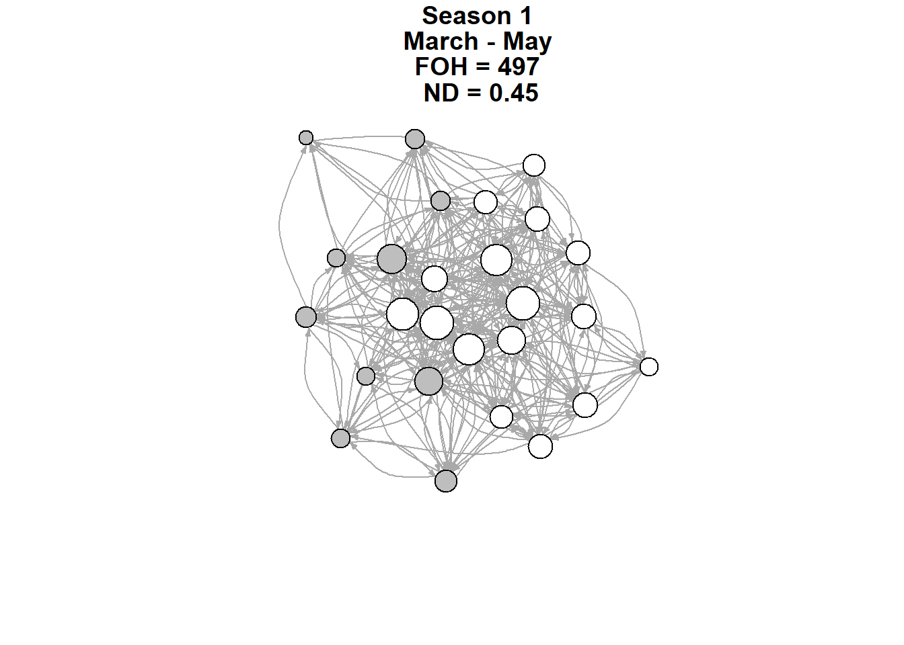
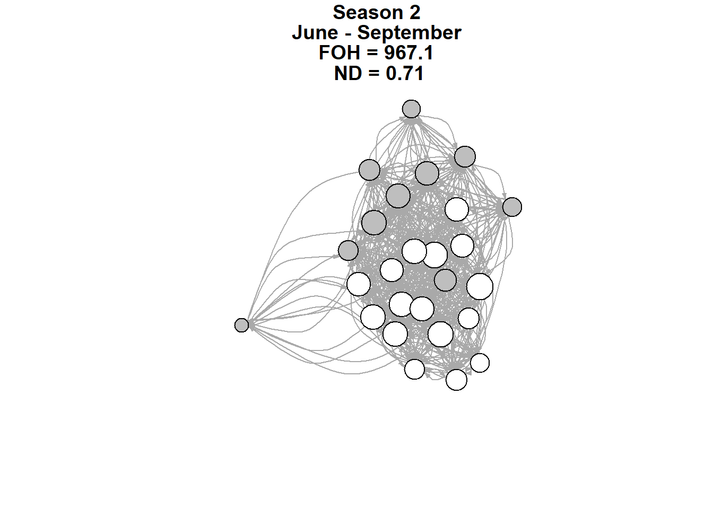
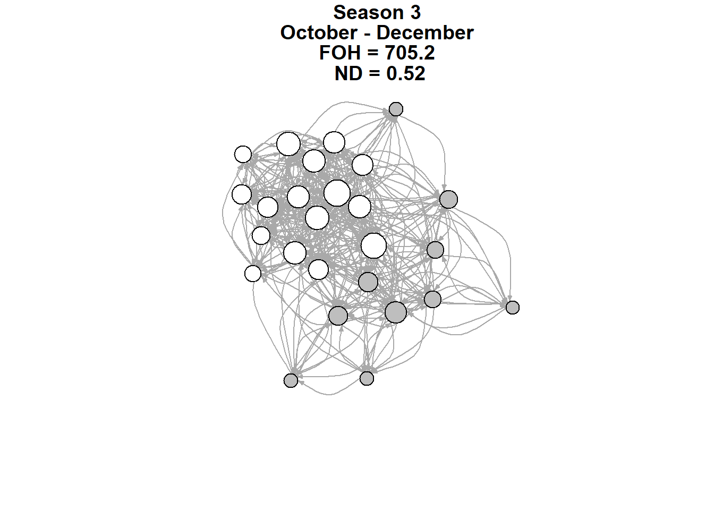
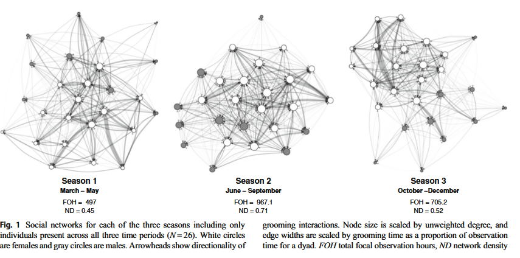
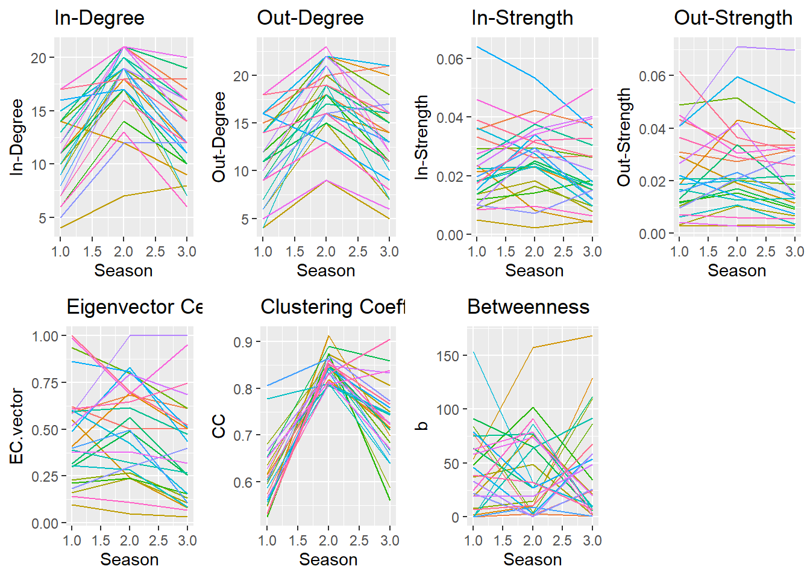
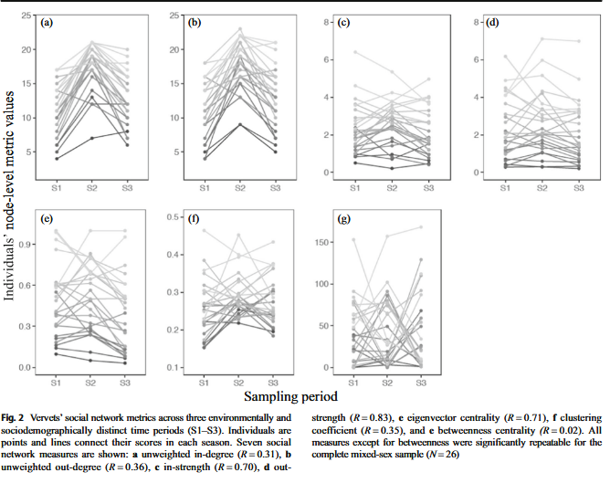
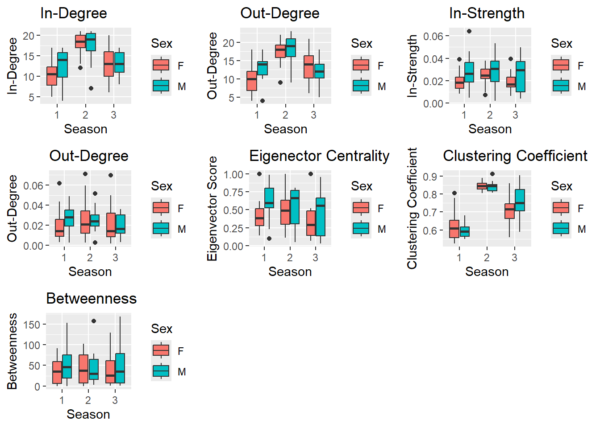
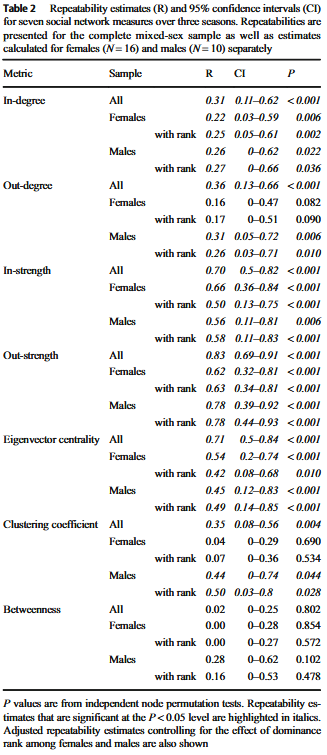
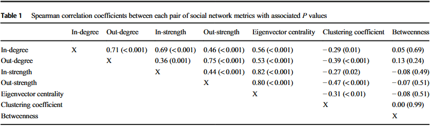

library(tidyverse)
library(igraph)
library(rptR)
library(lme4)
library(ggplot2)
library(cowplot)
library(mosaic)
library(rstatix)dataReplication
Data Replication Project: Replicating a Social Network Analysis
Based on: Blaszczyk, M. B. (2018). Consistency in social network position over changing environments in a seasonally breeding primate. Behavioral Ecology and Sociobiology, 72(1), 11. https://doi.org/10.1007/s00265-017-2425-y
Background
Aims
The original study cited above aimed to investigate the consistency of social behavior in wild vervet monkeys (Chlorocubus pygerthrus) across three seasons, the breeding season, winter season, and birthing season. Blaszczyk created grooming networks for each season and measured the repeatability of seven network metrics (In-/Out-degree, In-/Out-strength, betweenness, eigenvector centrality, and clustering coefficient) along with the effects of sex and dominance rank on these metrics.
Data Used
Blaszczyk used 20-minute continuous focal sampling to record grooming bouts lasting at least 5 seconds. The final data included who groomed and who was groomed, how long the grooming bout lasted, the total number of minutes the actor and receiver were seen, the total amount of time in seconds the same dyad was seen together, and grooming rate (grooming bout time/time dyad seen together). A different dataset was used for each season, resulting in three unique datasets characterizing grooming dyads for the group under study. Additionally, individuals’ IDs, sex, and elo rating for each season was stored in a fourth dataset.
Analysis
The initial analysis used function in the {igraph} package to construct grooming networks for each season. These networks were one directed and weighted based on grooming rate. {igraph} as also used to calculate the seven network metrics. Elo-ratings were calculated using the {EloRating} package and converted to ranks on the last day of each season (IDs_Sex_EloScores in OGData).
To test the repeatability of each metric across seasons, linear mixed effects models (LMMs) were run using the {rptR} package. Models were run for the whole mixed sex sample (n = 26), females (n = 16), and males (n = 10) with season being a random effect. These models were also all run again with rank included as a fixed effect, resulting in a total of 5 repeatability models run for each metric (35 total models).
Additionally, sex was used as a fixed effect for (G)LMMs to examine the effects of sex differences on network metrics. (G)LMMs were also run with rank as a fixed effect for each sex separately to determing the effects of dominance rank on all social network metrics.
Node-based permutation tests with 1000 iterations were used on all models to calculate p-values to determine the significance of the repeatability estimates from the rpt() models and the signifiance of sex and rank differences in the (G)LMMs. In order to test for the collinearity between each pair of metrics, Spearman rank correlation was used. All mixed models were fit with the {lme4} package.
Conclusions
Blaszczyk found that, based on the repeatability of each network metric, vervet monkey social network position was consistent over the three seasons. Grooming in-strength, out-strength, eigenvector centrality, and in-degree were the most repeatable for both sexes. Betweenness showed no consistency across seasons for both sexes. Only males were consistent in out-degree and clustering coefficients.
Tools
First, we will load in the libraries with the functions we need to conduct the analysis
Data
Next, we will load in the data using the raw links provided by github. Each of these files can be found in the github repository. The elo variable will hold the data with demographic details and elo rating, s1 will hold all the season 1 data, s2 will hold the season 2 data, and s3 will hold the season 3 data.
f <- "https://raw.githubusercontent.com/NicoJaws23/dataReplication/refs/heads/main/IDs_Sex_EloScores.csv"
elo <- read_csv(f)
head(elo)# A tibble: 6 × 5
ID Sex Elo.May Elo.Sep Elo.Dec
<chr> <chr> <dbl> <dbl> <dbl>
1 zar F 1507 1552 1509
2 xen F 1251 1317 1484
3 sal F 1349 1232 1252
4 urs F 881 1050 1089
5 gem F 857 1002 1075
6 tam F 1119 688 1070f1 <- "https://raw.githubusercontent.com/NicoJaws23/dataReplication/refs/heads/main/GroomDyads_S1.csv"
s1 <- read_csv(f1)
head(s1)# A tibble: 6 × 7
Actor Recip total.groom.secs Actor.mins Recip.mins dyad.obs.secs groom.rate
<chr> <chr> <dbl> <dbl> <dbl> <dbl> <dbl>
1 alb vin 1821 1129 1123 135120 0.0135
2 alb ros 1083 1129 1170 137940 0.00785
3 alb oli 834 1129 1133 135720 0.00615
4 alb qui 803 1129 1163 137520 0.00584
5 alb sal 748 1129 1186 138900 0.00539
6 alb eri 427 1129 1183 138720 0.00308f2 <- "https://raw.githubusercontent.com/NicoJaws23/dataReplication/refs/heads/main/GroomDyads_S2.csv"
s2 <- read_csv(f2)
head(s2)# A tibble: 6 × 7
Actor Recip total.groom.secs Actor.mins Recip.mins dyad.obs.secs groom.rate
<chr> <chr> <dbl> <dbl> <dbl> <dbl> <dbl>
1 alb dan 215 2222 2228 267000 0.000805
2 alb fra 30 2222 2233 267300 0.000112
3 alb gre 78 2222 2225 266820 0.000292
4 alb har 96 2222 2219 266460 0.000360
5 alb isa 1954 2222 2259 268860 0.00727
6 alb jan 226 2222 2231 267180 0.000846f3 <- "https://raw.githubusercontent.com/NicoJaws23/dataReplication/refs/heads/main/GroomDyads_S3.csv"
s3 <- read_csv(f3)
head(s3)# A tibble: 6 × 7
Actor Recip total.groom.secs Actor.mins Recip.mins dyad.obs.secs groom.rate
<chr> <chr> <dbl> <dbl> <dbl> <dbl> <dbl>
1 alb dop 127 1617 1634 195060 0.000651
2 alb eri 55 1617 1619 194160 0.000283
3 alb gem 78 1617 1640 195420 0.000399
4 alb isa 236 1617 1667 197040 0.00120
5 alb jan 210 1617 1639 195360 0.00107
6 alb jul 1475 1617 1647 195840 0.00753 Adjustments
Next, we will make some adjustments to the original data. Considering that the analysis uses season as a random effect, we ill add a column which holds a value for the corresponding season. We will also have a name for the season held in another column along with columns which convert the groom time and dyad time to minutes. Finally, we will combine all the data into one data frame.
s1 <- mutate(s1, Season = 1, sType = "Mating", groomMin = total.groom.secs/60, dyadObsMin = dyad.obs.secs/60)
s2 <- mutate(s2, Season = 2, sType = "Winter", groomMin = total.groom.secs/60, dyadObsMin = dyad.obs.secs/60)
s3 <- mutate(s3, Season = 3, sType = "Birth", groomMin = total.groom.secs/60, dyadObsMin = dyad.obs.secs/60)
#Combine all 3 seasons into one big table
com <- bind_rows(list(s1, s2, s3))Network Plots
Now will will plot each seasons social network. First, we need to define the edges for each network which we will store in a variable names sXEdges. This will be a data frame with the actor, recipient, and grooming rate. Next we will graph the social network using the graph_from_data_frame() function which will take out edges data as an argument along with setting directed to TRUE. In the original study, females are white circles while males are gray circles. To do this, we will call the colors of the vertices of the graph and set them to be based on vertices name which is based on each individuals ID. This will be linked to the elo table which has the sex of each individual which be used to assign the proper color to each vertex using an if_else() statement. Additionally, node size was based on a scaled unweighted degree which we will calulate using the degree() function from {igraph}. This will cause each node to be sized based on the degree of the grooming rate, with those recieving more being larger than those who recieved less. Then, using the plot.igraph() function, we will plot the social network. This will be repeated for each season. I was not able to figure out how to combine all three figures into one nice row, but it is meant to represent figure 1.
Season 1
#Season 1
s1Edges <- data.frame(from = s1$"Actor", to = s1$"Recip", weight = s1$groom.rate)
s1G <- graph_from_data_frame(d = s1Edges, directed = TRUE)
nsize1 <- 5 + 15*(degree(s1G)/max(degree(s1G)))
V(s1G)$color <- sapply(V(s1G)$name, function(name) {
row <- which(elo$ID == name)
if(elo$Sex[row] == "F") {
"white"
} else {
"gray"
}
})
s1p <- plot.igraph(s1G,
vertex.shape = "circle",
vertex.size = nsize1,
vertex.color = V(s1G)$color,
vertex.label = "",
edge.arrow.size = 0.3,
edge.curved = .5,
main = c("Season 1",
"March - May",
"FOH = 497", " ND = 0.45"))
Season 2
s2Edges <- data.frame(from = s2$"Actor", to = s2$"Recip", weight = s2$groom.rate)
s2G <- graph_from_data_frame(d = s2Edges, directed = TRUE)
nsize2 <- 5 + 15*(degree(s2G)/max(degree(s2G)))
V(s2G)$color <- sapply(V(s2G)$name, function(name) {
row <- which(elo$ID == name)
if(elo$Sex[row] == "F") {
"white"
} else {
"gray"
}
})
s2p <- plot.igraph(s2G,
vertex.shape = "circle",
vertex.size = nsize2,
vertex.color = V(s1G)$color,
vertex.label = "",
edge.curved = .75,
edge.arrow.size = 0.3,
main = c("Season 2",
"June - September",
"FOH = 967.1", " ND = 0.71"))
Season 3
s3Edges <- data.frame(from = s3$"Actor", to = s3$"Recip", weight = s3$groom.rate)
s3G <- graph_from_data_frame(d = s3Edges, directed = TRUE)
nsize3 <- 5 + 15*(degree(s3G)/max(degree(s3G)))
V(s3G)$color <- sapply(V(s3G)$name, function(name) {
row <- which(elo$ID == name)
if(elo$Sex[row] == "F") {
"white"
} else {
"gray"
}
})
s3p <- plot.igraph(s3G,
vertex.shape = "circle",
vertex.size = nsize3,
vertex.color = V(s1G)$color,
vertex.label = "",
edge.curved = .75,
edge.arrow.size = 0.3,
main = c("Season 3",
"October - December",
"FOH = 705.2", " ND = 0.52"))
My networks closely approximate those in the original study in Figure 1

Calculating Metrics
Next, we will calculate the each of the 7 metrics used in the study, in-degree, out-degree, in-strength, out-strength, betweenness, eigenvector centrality, and clustering coefficient. Each metric will be stored in a data frame with a unique column name for each season which will then be combined to analyze for repeatability. Additionally, the combined data frame will be mutated so that season and rank (numeric values) are converted to factors. The {igraph} functions degree(), strength(), betweenness(), eigen_centrality(), and transitivity() will be used to calculate the 7 different metrics. For each season I will select individual demographic information and the 7 metrics of interest using the select() function. I did this because the eigen_centrality() function produces a series of extra columns not needed for this analysis.
In addition to calculating all the metrics, I split the full list into one for males and one for females for later analysis based on sex. I also created a data frame which provides the mean and standard deviation of each metric per individual and anoter data frame which does the same but instead groups the data by sex and season.
#Calculating metrics for season 1
s1Metrics <- data.frame(ID = elo$ID, Sex = elo$Sex, Season = 1, rank = elo$Elo.May, In.Degree = igraph::degree(s1G, mode = "in"), Out.Degree = igraph::degree(s1G, mode = "out"), In.Strength = igraph::strength(s1G, mode = "in"), Out.Strength = igraph::strength(s1G, mode = "out"), b = igraph::betweenness(s1G, cutoff = -1), EC = eigen_centrality(s1G), CC = igraph::transitivity(s1G, type = "local"), row.names = NULL)
s1Metrics <- s1Metrics |>
select(ID, Sex, Season, rank, In.Degree, Out.Degree, In.Strength, Out.Strength, b, EC.vector, CC)
head(s1Metrics) ID Sex Season rank In.Degree Out.Degree In.Strength Out.Strength b
1 zar F 1 1507 17 18 0.039126215 0.061736006 7
2 xen F 1 1251 6 9 0.008355151 0.007084023 25
3 sal F 1 1349 5 9 0.009988800 0.009743543 22
4 urs F 1 881 11 5 0.027506757 0.004257243 58
5 gem F 1 857 10 6 0.013695313 0.003308306 37
6 tam F 1 1119 7 12 0.010113700 0.041067251 33
EC.vector CC
1 1.0000000 0.5321637
2 0.1418260 0.5333333
3 0.1833854 0.6000000
4 0.3776083 0.6515152
5 0.1622332 0.6363636
6 0.5823516 0.6666667#Calculating metrics for season 2
s2Metrics <- data.frame(ID = elo$ID, Sex = elo$Sex, Season = 2, rank = elo$Elo.Sep, In.Degree = igraph::degree(s2G, mode = "in"), Out.Degree = igraph::degree(s2G, mode = "out"), In.Strength = igraph::strength(s2G, mode = "in"), Out.Strength = igraph::strength(s2G, mode = "out"), b = igraph::betweenness(s2G, cutoff = -1), EC = eigen_centrality(s2G), CC = igraph::transitivity(s2G, type = "local"), row.names = NULL)
s2Metrics <- s2Metrics |>
select(ID, Sex, Season, rank, In.Degree, Out.Degree, In.Strength, Out.Strength, b, EC.vector, CC)
head(s2Metrics) ID Sex Season rank In.Degree Out.Degree In.Strength Out.Strength b
1 zar F 2 1552 18 19 0.031444844 0.036497185 11
2 xen F 2 1317 13 13 0.009588003 0.005919843 91
3 sal F 2 1232 12 16 0.007074139 0.020996301 1
4 urs F 2 1050 21 9 0.034011935 0.002913066 74
5 gem F 2 1002 17 15 0.018231240 0.010449569 49
6 tam F 2 688 19 22 0.028515347 0.071021418 0
EC.vector CC
1 0.7013592 0.8526316
2 0.1105535 0.8596491
3 0.3006333 0.8692810
4 0.3808476 0.8142857
5 0.2385162 0.8479532
6 1.0000000 0.8311688#Calculating metrics for season 3
s3Metrics <- data.frame(ID = elo$ID, Sex = elo$Sex, Season = 3, rank = elo$Elo.Dec, In.Degree = igraph::degree(s3G, mode = "in"), Out.Degree = igraph::degree(s3G, mode = "out"), In.Strength = igraph::strength(s3G, mode = "in"), Out.Strength = igraph::strength(s3G, mode = "out"), b = igraph::betweenness(s3G, cutoff = -1), EC = eigen_centrality(s3G), CC = igraph::transitivity(s3G, type = "local"), row.names = NULL)
s3Metrics <- s3Metrics |>
select(ID, Sex, Season, rank, In.Degree, Out.Degree, In.Strength, Out.Strength, b, EC.vector, CC)
head(s3Metrics) ID Sex Season rank In.Degree Out.Degree In.Strength Out.Strength b
1 zar F 3 1509 14 16 0.026443085 0.031297873 68
2 xen F 3 1484 6 8 0.006274302 0.005536688 3
3 sal F 3 1252 12 17 0.015137948 0.029613289 26
4 urs F 3 1089 20 6 0.039608286 0.002019566 20
5 gem F 3 1075 7 7 0.007697091 0.006615943 2
6 tam F 3 1070 16 16 0.021998259 0.069818259 59
EC.vector CC
1 0.52124155 0.7660819
2 0.06649576 0.7222222
3 0.39800408 0.7720588
4 0.31878178 0.6714286
5 0.10630655 0.7500000
6 1.00000000 0.7251462#Combining metrics into one data.frame
allMetrics <- bind_rows(list(s1Metrics, s2Metrics, s3Metrics))
allMetrics <- allMetrics |>
mutate(Season = as.factor(Season))
head(allMetrics) ID Sex Season rank In.Degree Out.Degree In.Strength Out.Strength b
1 zar F 1 1507 17 18 0.039126215 0.061736006 7
2 xen F 1 1251 6 9 0.008355151 0.007084023 25
3 sal F 1 1349 5 9 0.009988800 0.009743543 22
4 urs F 1 881 11 5 0.027506757 0.004257243 58
5 gem F 1 857 10 6 0.013695313 0.003308306 37
6 tam F 1 1119 7 12 0.010113700 0.041067251 33
EC.vector CC
1 1.0000000 0.5321637
2 0.1418260 0.5333333
3 0.1833854 0.6000000
4 0.3776083 0.6515152
5 0.1622332 0.6363636
6 0.5823516 0.6666667#Creating data for Females and Males
Females <- allMetrics |>
filter(Sex == "F")
Males <- allMetrics |>
filter(Sex == "M")
IndivDescrip <- allMetrics |>
group_by(ID) |>
summarize(In.Degree.Mean = mean(In.Degree), In.Degree.SD = sd(In.Degree), Out.Degree.Mean = mean(Out.Degree), Out.Degree.SD = sd(In.Degree), In.Strength.Mean = mean(In.Strength), In.Strength.SD = sd(In.Strength), Out.Degree.Mean = mean(Out.Degree), Out.Degree.SD = sd(Out.Degree), Eigenvector.Mean = mean(EC.vector), Eigenvector.SD = sd(EC.vector), Clustering.Coefficient.Mean = mean(CC), Custering.Coefficient.SD = sd(CC), Betweennss.Mean = mean(b), Betweenness.SD = sd(b))
IndivDescrip# A tibble: 26 × 13
ID In.Degree.Mean In.Degree.SD Out.Degree.Mean Out.Degree.SD
<chr> <dbl> <dbl> <dbl> <dbl>
1 alb 17.7 0.577 19 2.65
2 dan 18.3 2.31 15.7 2.08
3 dop 13.7 3.79 18 5.29
4 eri 11.7 2.52 14.7 1.15
5 fra 6.33 2.08 6 2.65
6 gem 11.3 5.13 9.33 4.93
7 gre 14.3 5.03 15 5
8 har 16.3 2.52 18 4
9 isa 10 4 13.7 3.79
10 jan 12.7 3.79 12.3 2.31
# ℹ 16 more rows
# ℹ 8 more variables: In.Strength.Mean <dbl>, In.Strength.SD <dbl>,
# Eigenvector.Mean <dbl>, Eigenvector.SD <dbl>,
# Clustering.Coefficient.Mean <dbl>, Custering.Coefficient.SD <dbl>,
# Betweennss.Mean <dbl>, Betweenness.SD <dbl>SeasonDescrip <- allMetrics |>
group_by(Sex, Season) |>
summarize(In.Degree.Mean = mean(In.Degree), In.Degree.SD = sd(In.Degree), Out.Degree.Mean = mean(Out.Degree), Out.Degree.SD = sd(In.Degree), In.Strength.Mean = mean(In.Strength), In.Strength.SD = sd(In.Strength), Out.Degree.Mean = mean(Out.Degree), Out.Degree.SD = sd(Out.Degree), Eigenvector.Mean = mean(EC.vector), Eigenvector.SD = sd(EC.vector), Clustering.Coefficient.Mean = mean(CC), Custering.Coefficient.SD = sd(CC), Betweennss.Mean = mean(b), Betweenness.SD = sd(b))`summarise()` has grouped output by 'Sex'. You can override using the `.groups`
argument.SeasonDescrip# A tibble: 6 × 14
# Groups: Sex [2]
Sex Season In.Degree.Mean In.Degree.SD Out.Degree.Mean Out.Degree.SD
<chr> <fct> <dbl> <dbl> <dbl> <dbl>
1 F 1 10.4 3.63 10.2 4.12
2 F 2 17.9 2.79 17.5 3.50
3 F 3 13.1 4.33 13.6 4.98
4 M 1 12.5 4.45 12.9 3.96
5 M 2 17.2 4.54 17.9 4.43
6 M 3 12.9 3.14 12 3.59
# ℹ 8 more variables: In.Strength.Mean <dbl>, In.Strength.SD <dbl>,
# Eigenvector.Mean <dbl>, Eigenvector.SD <dbl>,
# Clustering.Coefficient.Mean <dbl>, Custering.Coefficient.SD <dbl>,
# Betweennss.Mean <dbl>, Betweenness.SD <dbl>Plotting Metrics
Here I will use functions from {ggplot2} and {cowplot} to visualize the changes in each metric over the three season. This is meant to reflect the graphs in Figure 2 of the original study
InDegreePlot <- ggplot(data = allMetrics, mapping = aes(x = as.numeric(Season), y = In.Degree, color = ID)) +
geom_line() +
theme(legend.position = "none") +
ggtitle("In-Degree") +
xlab(label = "Season") +
ylab(label = "In-Degree")
OutDegreePlot <- ggplot(data = allMetrics, mapping = aes(x = as.numeric(Season), y = Out.Degree, color = ID)) +
geom_line()+
theme(legend.position = "none") +
ggtitle("Out-Degree") +
xlab(label = "Season") +
ylab(label = "Out-Degree")
InStrengthPlot <- ggplot(data = allMetrics, mapping = aes(x= as.numeric(Season), y= In.Strength, color = ID)) +
geom_line()+
theme(legend.position = "none") +
ggtitle("In-Strength") +
xlab(label = "Season") +
ylab(label = "In-Strength")
OutStrengthPlot <- ggplot(data = allMetrics, mapping = aes(x = as.numeric(Season), y = Out.Strength, color = ID)) +
geom_line()+
theme(legend.position = "none") +
ggtitle("Out-Strength") +
xlab(label = "Season") +
ylab(label = "Out-Strength")
betweenPlot <- ggplot(data = allMetrics, mapping = aes(x = as.numeric(Season), y = b, color = ID)) +
geom_line()+
theme(legend.position = "none") +
ggtitle("Betweenness") +
xlab(label = "Season")
eigenPlot <- ggplot(data = allMetrics, mapping = aes(x = as.numeric(Season), y = EC.vector, color = ID)) +
geom_line()+
theme(legend.position = "none") +
ggtitle("Eigenvector Centrality") +
xlab(label = "Season")
clusterPlot <- ggplot(data = allMetrics, mapping = aes(x = as.numeric(Season), y = CC, color = ID)) +
geom_line()+
theme(legend.position = "none") +
ggtitle("Clustering Coefficient") +
xlab(label = "Season")
cowplot <- plot_grid(InDegreePlot, OutDegreePlot, InStrengthPlot, OutStrengthPlot, eigenPlot, clusterPlot, betweenPlot, nrow = 2, ncol = 4)
cowplot
These plots are meant to mirror the ones in figure 2 of the original study. My clustering coefficient is the only one which seems to not match the original.

I will also create boxplots of each metric per sex in each season, recreating Figure 3 in the article. The “fill” argument within ggplot() allows me to make separate boxes based on sex for each season. F indicates Female while M indicates Male
inD <- ggplot(data = allMetrics, mapping = aes(x = Season, y = In.Degree, fill = Sex)) +
geom_boxplot() +
ylab(label = "In-Degree") +
ggtitle("In-Degree")
outD <- ggplot(data = allMetrics, mapping = aes(x = Season, y = Out.Degree, fill = Sex)) +
geom_boxplot() +
ylab(label = "Out-Degree") +
ggtitle("Out-Degree")
inS <- ggplot(data = allMetrics, mapping = aes(x = Season, y = In.Strength, fill = Sex)) +
geom_boxplot() +
ylab(label = "In-Strength") +
ggtitle("In-Strength")
outS <- ggplot(data = allMetrics, mapping = aes(x = Season, y = Out.Strength, fill = Sex)) +
geom_boxplot() +
ylab(label = "Out-Degree") +
ggtitle("Out-Degree")
eigen <- ggplot(data = allMetrics, mapping = aes(x = Season, y = EC.vector, fill = Sex)) +
geom_boxplot() +
ylab(label = "Eigenvector Score") +
ggtitle("Eigenector Centrality")
clust <- ggplot(data = allMetrics, mapping = aes(x = Season, y = CC, fill = Sex)) +
geom_boxplot() +
ylab(label = "Clustering Coefficient") +
ggtitle("Clustering Coefficient")
between <- ggplot(data = allMetrics, mapping = aes(x = Season, y = b, fill = Sex)) +
geom_boxplot() +
ylab(label = "Betweenness") +
ggtitle("Betweenness")
cowplot1 <- plot_grid(inD, outD, inS, outS, eigen, clust, between)
cowplot1
These boxplots are meant to resemble figure 3 and appear to deviate from those made in the original study

Running Models
Now we will fun the repeatability models for each of the metrics. Each of the 7 metrics has 5 models associated with it, 1 for all individual combined, 1 for just females, 1 for just females but with rank as a fixed effect, 1 for just males, and 1 for just males with rank as a fixed effect. All models use the rpt() function from {rptR}. In all models, the season and individual ID are random effects. The grname argument in the function designates how the function should group the data to test for repeatability. Since we are looking for individual repeatability, we will put “ID” here. Gaussian is the data type here as we are dealing with a normal distribution
In-Degree & Out-Degree
#Degree repeatability
#In-degree
IOm <- rpt(In.Degree ~ (1|ID) + (1|Season),
grname = "ID",
data = allMetrics,
datatype = "Gaussian")Bootstrap Progress:summary(IOm)
Repeatability estimation using the lmm method
Call = rpt(formula = In.Degree ~ (1 | ID) + (1 | Season), grname = "ID", data = allMetrics, datatype = "Gaussian")
Data: 78 observations
----------------------------------------
ID (26 groups)
Repeatability estimation overview:
R SE 2.5% 97.5% P_permut LRT_P
0.31 0.146 0.108 0.64 NA 0
Bootstrapping and Permutation test:
N Mean Median 2.5% 97.5%
boot 1000 0.352 0.343 0.108 0.64
permut 1 NA NA NA NA
Likelihood ratio test:
logLik full model = -206.7372
logLik red. model = -217.0622
D = 20.6, df = 1, P = 2.76e-06
----------------------------------------#Females
IOmF <- rpt(In.Degree ~ (1|ID) + (1|Season),
grname = "ID",
data = Females,
datatype = "Gaussian")Bootstrap Progress:summary(IOmF)
Repeatability estimation using the lmm method
Call = rpt(formula = In.Degree ~ (1 | ID) + (1 | Season), grname = "ID", data = Females, datatype = "Gaussian")
Data: 48 observations
----------------------------------------
ID (16 groups)
Repeatability estimation overview:
R SE 2.5% 97.5% P_permut LRT_P
0.251 0.154 0.0443 0.617 NA 0
Bootstrapping and Permutation test:
N Mean Median 2.5% 97.5%
boot 1000 0.297 0.289 0.0443 0.617
permut 1 NA NA NA NA
Likelihood ratio test:
logLik full model = -126.5628
logLik red. model = -132.1948
D = 11.3, df = 1, P = 0.000395
----------------------------------------#Females with Rank
IOmF_rank <- rpt(In.Degree ~ rank + (1|ID) + (1|Season),
grname = "ID",
data = Females,
datatype = "Gaussian")Bootstrap Progress:summary(IOmF_rank)
Repeatability estimation using the lmm method
Call = rpt(formula = In.Degree ~ rank + (1 | ID) + (1 | Season), grname = "ID", data = Females, datatype = "Gaussian")
Data: 48 observations
----------------------------------------
ID (16 groups)
Repeatability estimation overview:
R SE 2.5% 97.5% P_permut LRT_P
0.24 0.157 0.0475 0.633 NA 0.001
Bootstrapping and Permutation test:
N Mean Median 2.5% 97.5%
boot 1000 0.285 0.26 0.0475 0.633
permut 1 NA NA NA NA
Likelihood ratio test:
logLik full model = -131.4491
logLik red. model = -136.3867
D = 9.88, df = 1, P = 0.000838
----------------------------------------#Males
IOmM <- rpt(In.Degree ~ (1|ID) + (1|Season),
grname = "ID",
data = Males,
datatype = "Gaussian")Bootstrap Progress:summary(IOmM)
Repeatability estimation using the lmm method
Call = rpt(formula = In.Degree ~ (1 | ID) + (1 | Season), grname = "ID", data = Males, datatype = "Gaussian")
Data: 30 observations
----------------------------------------
ID (10 groups)
Repeatability estimation overview:
R SE 2.5% 97.5% P_permut LRT_P
0.461 0.182 0.113 0.786 NA 0.001
Bootstrapping and Permutation test:
N Mean Median 2.5% 97.5%
boot 1000 0.469 0.472 0.113 0.786
permut 1 NA NA NA NA
Likelihood ratio test:
logLik full model = -79.84553
logLik red. model = -85.1386
D = 10.6, df = 1, P = 0.00057
----------------------------------------#Males with Rank
IOmM_rank <- rpt(In.Degree ~ rank + (1|ID) + (1|Season),
grname = "ID",
data = Males,
datatype = "Gaussian")Bootstrap Progress:summary(IOmM_rank)
Repeatability estimation using the lmm method
Call = rpt(formula = In.Degree ~ rank + (1 | ID) + (1 | Season), grname = "ID", data = Males, datatype = "Gaussian")
Data: 30 observations
----------------------------------------
ID (10 groups)
Repeatability estimation overview:
R SE 2.5% 97.5% P_permut LRT_P
0.481 0.191 0.087 0.797 NA 0
Bootstrapping and Permutation test:
N Mean Median 2.5% 97.5%
boot 1000 0.47 0.484 0.087 0.797
permut 1 NA NA NA NA
Likelihood ratio test:
logLik full model = -84.73053
logLik red. model = -90.18343
D = 10.9, df = 1, P = 0.000479
----------------------------------------#Out-degree
IOmOut <- rpt(Out.Degree ~ (1|ID) + (1|Season),
grname = "ID",
data = allMetrics,
datatype = "Gaussian")Bootstrap Progress:summary(IOmOut)
Repeatability estimation using the lmm method
Call = rpt(formula = Out.Degree ~ (1 | ID) + (1 | Season), grname = "ID", data = allMetrics, datatype = "Gaussian")
Data: 78 observations
----------------------------------------
ID (26 groups)
Repeatability estimation overview:
R SE 2.5% 97.5% P_permut LRT_P
0.357 0.148 0.126 0.66 NA 0
Bootstrapping and Permutation test:
N Mean Median 2.5% 97.5%
boot 1000 0.386 0.38 0.126 0.66
permut 1 NA NA NA NA
Likelihood ratio test:
logLik full model = -212.3641
logLik red. model = -224.254
D = 23.8, df = 1, P = 5.4e-07
----------------------------------------#Females
ioOutFemales <- rpt(Out.Degree ~ (1|ID) + (1|Season),
grname = "ID",
data = Females,
datatype = "Gaussian")Bootstrap Progress:summary(ioOutFemales)
Repeatability estimation using the lmm method
Call = rpt(formula = Out.Degree ~ (1 | ID) + (1 | Season), grname = "ID", data = Females, datatype = "Gaussian")
Data: 48 observations
----------------------------------------
ID (16 groups)
Repeatability estimation overview:
R SE 2.5% 97.5% P_permut LRT_P
0.39 0.175 0.109 0.741 NA 0
Bootstrapping and Permutation test:
N Mean Median 2.5% 97.5%
boot 1000 0.421 0.425 0.109 0.741
permut 1 NA NA NA NA
Likelihood ratio test:
logLik full model = -128.6901
logLik red. model = -139.0309
D = 20.7, df = 1, P = 2.71e-06
----------------------------------------#Females with rank
ioOutFemales_rank <- rpt(Out.Degree ~ rank + (1|ID) + (1|Season),
grname = "ID",
data = Females,
datatype = "Gaussian")Bootstrap Progress:summary(ioOutFemales_rank)
Repeatability estimation using the lmm method
Call = rpt(formula = Out.Degree ~ rank + (1 | ID) + (1 | Season), grname = "ID", data = Females, datatype = "Gaussian")
Data: 48 observations
----------------------------------------
ID (16 groups)
Repeatability estimation overview:
R SE 2.5% 97.5% P_permut LRT_P
0.401 0.18 0.114 0.764 NA 0
Bootstrapping and Permutation test:
N Mean Median 2.5% 97.5%
boot 1000 0.425 0.415 0.114 0.764
permut 1 NA NA NA NA
Likelihood ratio test:
logLik full model = -133.1226
logLik red. model = -143.7601
D = 21.3, df = 1, P = 1.99e-06
----------------------------------------#Males
ioOutMales <- rpt(Out.Degree ~ (1|ID) + (1|Season),
grname = "ID",
data = Males,
datatype = "Gaussian")Bootstrap Progress:summary(ioOutMales)
Repeatability estimation using the lmm method
Call = rpt(formula = Out.Degree ~ (1 | ID) + (1 | Season), grname = "ID", data = Males, datatype = "Gaussian")
Data: 30 observations
----------------------------------------
ID (10 groups)
Repeatability estimation overview:
R SE 2.5% 97.5% P_permut LRT_P
0.339 0.181 0.0612 0.722 NA 0.003
Bootstrapping and Permutation test:
N Mean Median 2.5% 97.5%
boot 1000 0.358 0.341 0.0612 0.722
permut 1 NA NA NA NA
Likelihood ratio test:
logLik full model = -81.30551
logLik red. model = -84.95135
D = 7.29, df = 1, P = 0.00346
----------------------------------------#Males with rank
ioOutMales_rank <- rpt(Out.Degree ~ rank + (1|ID) + (1|Season),
grname = "ID",
data = Males,
datatype = "Gaussian")Bootstrap Progress:summary(ioOutMales_rank)
Repeatability estimation using the lmm method
Call = rpt(formula = Out.Degree ~ rank + (1 | ID) + (1 | Season), grname = "ID", data = Males, datatype = "Gaussian")
Data: 30 observations
----------------------------------------
ID (10 groups)
Repeatability estimation overview:
R SE 2.5% 97.5% P_permut LRT_P
0.352 0.191 0.0149 0.736 NA 0.004
Bootstrapping and Permutation test:
N Mean Median 2.5% 97.5%
boot 1000 0.366 0.361 0.0149 0.736
permut 1 NA NA NA NA
Likelihood ratio test:
logLik full model = -86.18081
logLik red. model = -89.76816
D = 7.17, df = 1, P = 0.0037
----------------------------------------In-Strength & Out-Strength
The out-strength values used in the male-only models were logged transformed to meet normal distribution assumptions
#Strength Repeatability
#In-Strength
inStrength <- rpt(In.Strength ~ (1|ID) + (1|Season),
grname = "ID",
data = allMetrics,
datatype = "Gaussian")Bootstrap Progress:summary(inStrength)
Repeatability estimation using the lmm method
Call = rpt(formula = In.Strength ~ (1 | ID) + (1 | Season), grname = "ID", data = allMetrics, datatype = "Gaussian")
Data: 78 observations
----------------------------------------
ID (26 groups)
Repeatability estimation overview:
R SE 2.5% 97.5% P_permut LRT_P
0.699 0.0873 0.486 0.821 NA 0
Bootstrapping and Permutation test:
N Mean Median 2.5% 97.5%
boot 1000 0.681 0.69 0.486 0.821
permut 1 NA NA NA NA
Likelihood ratio test:
logLik full model = 245.9617
logLik red. model = 225.5237
D = 40.9, df = 1, P = 8.11e-11
----------------------------------------#Females
inStrengthF <- rpt(In.Strength ~ (1|ID) + (1|Season),
grname = "ID",
data = Females,
datatype = "Gaussian")Bootstrap Progress:summary(inStrengthF)
Repeatability estimation using the lmm method
Call = rpt(formula = In.Strength ~ (1 | ID) + (1 | Season), grname = "ID", data = Females, datatype = "Gaussian")
Data: 48 observations
----------------------------------------
ID (16 groups)
Repeatability estimation overview:
R SE 2.5% 97.5% P_permut LRT_P
0.562 0.138 0.258 0.779 NA 0
Bootstrapping and Permutation test:
N Mean Median 2.5% 97.5%
boot 1000 0.552 0.568 0.258 0.779
permut 1 NA NA NA NA
Likelihood ratio test:
logLik full model = 162.0281
logLik red. model = 153.4876
D = 17.1, df = 1, P = 1.79e-05
----------------------------------------#Females with rank
inStrengthF_rank <- rpt(In.Degree ~ rank + (1|ID) + (1|Season),
grname = "ID",
data = Females,
datatype = "Gaussian")Bootstrap Progress:summary(inStrengthF_rank)
Repeatability estimation using the lmm method
Call = rpt(formula = In.Degree ~ rank + (1 | ID) + (1 | Season), grname = "ID", data = Females, datatype = "Gaussian")
Data: 48 observations
----------------------------------------
ID (16 groups)
Repeatability estimation overview:
R SE 2.5% 97.5% P_permut LRT_P
0.24 0.157 0.0489 0.639 NA 0.001
Bootstrapping and Permutation test:
N Mean Median 2.5% 97.5%
boot 1000 0.287 0.263 0.0489 0.639
permut 1 NA NA NA NA
Likelihood ratio test:
logLik full model = -131.4491
logLik red. model = -136.3867
D = 9.88, df = 1, P = 0.000838
----------------------------------------#Males
inStrengthM <- rpt(In.Degree ~ (1|ID) + (1|Season),
grname = "ID",
data = Males,
datatype = "Gaussian")Bootstrap Progress:summary(inStrengthM)
Repeatability estimation using the lmm method
Call = rpt(formula = In.Degree ~ (1 | ID) + (1 | Season), grname = "ID", data = Males, datatype = "Gaussian")
Data: 30 observations
----------------------------------------
ID (10 groups)
Repeatability estimation overview:
R SE 2.5% 97.5% P_permut LRT_P
0.461 0.182 0.0991 0.782 NA 0.001
Bootstrapping and Permutation test:
N Mean Median 2.5% 97.5%
boot 1000 0.461 0.465 0.0991 0.782
permut 1 NA NA NA NA
Likelihood ratio test:
logLik full model = -79.84553
logLik red. model = -85.1386
D = 10.6, df = 1, P = 0.00057
----------------------------------------#Males with rank
inStrengthM_rank <- rpt(In.Strength ~ rank + (1|ID) + (1|Season),
grname = "ID",
data = Males,
datatype = "Gaussian")Bootstrap Progress:summary(inStrengthM_rank)
Repeatability estimation using the lmm method
Call = rpt(formula = In.Strength ~ rank + (1 | ID) + (1 | Season), grname = "ID", data = Males, datatype = "Gaussian")
Data: 30 observations
----------------------------------------
ID (10 groups)
Repeatability estimation overview:
R SE 2.5% 97.5% P_permut LRT_P
0.735 0.153 0.306 0.897 NA 0
Bootstrapping and Permutation test:
N Mean Median 2.5% 97.5%
boot 1000 0.69 0.724 0.306 0.897
permut 1 NA NA NA NA
Likelihood ratio test:
logLik full model = 75.47275
logLik red. model = 67.92525
D = 15.1, df = 1, P = 5.11e-05
----------------------------------------#Out-Strength
outStrength <- rpt(Out.Strength ~ (1|ID) + (1|Season),
grname = "ID",
data = allMetrics,
datatype = "Gaussian")Bootstrap Progress:summary(outStrength)
Repeatability estimation using the lmm method
Call = rpt(formula = Out.Strength ~ (1 | ID) + (1 | Season), grname = "ID", data = allMetrics, datatype = "Gaussian")
Data: 78 observations
----------------------------------------
ID (26 groups)
Repeatability estimation overview:
R SE 2.5% 97.5% P_permut LRT_P
0.764 0.0747 0.583 0.869 NA 0
Bootstrapping and Permutation test:
N Mean Median 2.5% 97.5%
boot 1000 0.747 0.756 0.583 0.869
permut 1 NA NA NA NA
Likelihood ratio test:
logLik full model = 230.8157
logLik red. model = 205.2107
D = 51.2, df = 1, P = 4.15e-13
----------------------------------------#Females
outStrengthF <- rpt(Out.Strength ~ (1|ID) + (1|Season),
grname = "ID",
data = Females,
datatype = "Gaussian")Bootstrap Progress:summary(outStrengthF)
Repeatability estimation using the lmm method
Call = rpt(formula = Out.Strength ~ (1 | ID) + (1 | Season), grname = "ID", data = Females, datatype = "Gaussian")
Data: 48 observations
----------------------------------------
ID (16 groups)
Repeatability estimation overview:
R SE 2.5% 97.5% P_permut LRT_P
0.79 0.0959 0.535 0.903 NA 0
Bootstrapping and Permutation test:
N Mean Median 2.5% 97.5%
boot 1000 0.766 0.784 0.535 0.903
permut 1 NA NA NA NA
Likelihood ratio test:
logLik full model = 137.0253
logLik red. model = 119.7636
D = 34.5, df = 1, P = 2.11e-09
----------------------------------------#Females with rank
outStrengthF_rank <- rpt(Out.Strength ~ rank + (1|ID) + (1|Season),
grname = "ID",
data = Females,
datatype = "Gaussian")Bootstrap Progress:summary(outStrengthF_rank)
Repeatability estimation using the lmm method
Call = rpt(formula = Out.Strength ~ rank + (1 | ID) + (1 | Season), grname = "ID", data = Females, datatype = "Gaussian")
Data: 48 observations
----------------------------------------
ID (16 groups)
Repeatability estimation overview:
R SE 2.5% 97.5% P_permut LRT_P
0.794 0.0924 0.555 0.906 NA 0
Bootstrapping and Permutation test:
N Mean Median 2.5% 97.5%
boot 1000 0.774 0.788 0.555 0.906
permut 1 NA NA NA NA
Likelihood ratio test:
logLik full model = 126.4271
logLik red. model = 108.9588
D = 34.9, df = 1, P = 1.7e-09
----------------------------------------#Male Out-Strength logged
Males <- Males |>
mutate(logOutStrength = log(Out.Strength))
#New out strength model
outStrengthM_log <- rpt(logOutStrength ~ (1|ID) + (1|Season),
grname = "ID",
data = Males,
datatype = "Gaussian")Bootstrap Progress:summary(outStrengthM_log)
Repeatability estimation using the lmm method
Call = rpt(formula = logOutStrength ~ (1 | ID) + (1 | Season), grname = "ID", data = Males, datatype = "Gaussian")
Data: 30 observations
----------------------------------------
ID (10 groups)
Repeatability estimation overview:
R SE 2.5% 97.5% P_permut LRT_P
0.832 0.11 0.509 0.943 NA 0
Bootstrapping and Permutation test:
N Mean Median 2.5% 97.5%
boot 1000 0.797 0.82 0.509 0.943
permut 1 NA NA NA NA
Likelihood ratio test:
logLik full model = -22.45331
logLik red. model = -35.75876
D = 26.6, df = 1, P = 1.24e-07
----------------------------------------#Males with rank
outStrengthM_rank_log <- rpt(logOutStrength ~ rank + (1|ID) + (1|Season),
grname = "ID",
data = Males,
datatype = "Gaussian")Bootstrap Progress:summary(outStrengthM_rank_log)
Repeatability estimation using the lmm method
Call = rpt(formula = logOutStrength ~ rank + (1 | ID) + (1 | Season), grname = "ID", data = Males, datatype = "Gaussian")
Data: 30 observations
----------------------------------------
ID (10 groups)
Repeatability estimation overview:
R SE 2.5% 97.5% P_permut LRT_P
0.824 0.118 0.481 0.937 NA 0
Bootstrapping and Permutation test:
N Mean Median 2.5% 97.5%
boot 1000 0.791 0.82 0.481 0.937
permut 1 NA NA NA NA
Likelihood ratio test:
logLik full model = -28.75399
logLik red. model = -41.96178
D = 26.4, df = 1, P = 1.38e-07
----------------------------------------Betweenness
For the betweenness models, a generalized linear mixed effects model (GLMMs) with a Poisson distribution was used instead of the standard linear mixed model. This was done using the rptPoisson() function in {rptR}
#FOR BETWEENNESS: GLMMs w/ Poisson dist
btM_glmm <- rptPoisson(b ~ (1|ID) + (1|Season),
grname = "ID",
data = allMetrics)Bootstrap Progress:summary(btM_glmm)
Repeatability estimation using glmer method
Call = rptPoisson(formula = b ~ (1 | ID) + (1 | Season), grname = "ID", data = allMetrics)
Data: 78 observations
----------------------------------------
ID (26 groups)
Repeatability estimation overview:
R SE 2.5% 97.5% P_permut
Org 0.00848 0.0294 0 0.101 NA
Link 0.03126 0.0806 0 0.269 NA
Bootstrapping:
N Mean Median 2.5% 97.5%
Org 1000 0.0195 0.00346 0 0.101
Link 1000 0.0590 0.01313 0 0.269
Permutation test:
N Mean Median 2.5% 97.5% P_permut
Org 1 NA NA NA NA NA
Link 1 NA NA NA NA NA
Likelihood ratio test:
logLik full model = -381.7016
logLik red. model = -381.7208
D = 0.0382, df = 1, P = 0.422
----------------------------------------#Females
btM_Females_glmm <- rptPoisson(b ~ (1|ID) + (1|Season),
grname = "ID",
data = Females)Bootstrap Progress:summary(btM_Females_glmm)
Repeatability estimation using glmer method
Call = rptPoisson(formula = b ~ (1 | ID) + (1 | Season), grname = "ID", data = Females)
Data: 48 observations
----------------------------------------
ID (16 groups)
Repeatability estimation overview:
R SE 2.5% 97.5% P_permut
Org 1.42e-10 0.0303 0 0.105 NA
Link 6.35e-10 0.0875 0 0.293 NA
Bootstrapping:
N Mean Median 2.5% 97.5%
Org 1000 0.0173 1.01e-09 0 0.105
Link 1000 0.0566 3.91e-09 0 0.293
Permutation test:
N Mean Median 2.5% 97.5% P_permut
Org 1 NA NA NA NA NA
Link 1 NA NA NA NA NA
Likelihood ratio test:
logLik full model = -231.1198
logLik red. model = -231.1198
D = 6.43e-07, df = 1, P = 0.5
----------------------------------------#Females with rank
btM_Females_rank_glmm <- rptPoisson(b ~ rank + (1|ID) + (1|Season),
grname = "ID",
data = Females)Bootstrap Progress:summary(btM_Females_rank_glmm)
Repeatability estimation using glmer method
Call = rptPoisson(formula = b ~ rank + (1 | ID) + (1 | Season), grname = "ID", data = Females)
Data: 48 observations
----------------------------------------
ID (16 groups)
Repeatability estimation overview:
R SE 2.5% 97.5% P_permut
Org 0 0.0315 0 0.0993 NA
Link 0 0.0803 0 0.2662 NA
Bootstrapping:
N Mean Median 2.5% 97.5%
Org 1000 0.0142 2.02e-10 0 0.0993
Link 1000 0.0428 6.75e-10 0 0.2662
Permutation test:
N Mean Median 2.5% 97.5% P_permut
Org 1 NA NA NA NA NA
Link 1 NA NA NA NA NA
Likelihood ratio test:
logLik full model = -231.1188
logLik red. model = -231.1188
D = 7.13e-07, df = 1, P = 0.5
----------------------------------------#Males
btM_Males_glmm <- rptPoisson(b ~ (1|ID) + (1|Season),
grname = "ID",
data = Males)Bootstrap Progress:summary(btM_Males_glmm)
Repeatability estimation using glmer method
Call = rptPoisson(formula = b ~ (1 | ID) + (1 | Season), grname = "ID", data = Males)
Data: 30 observations
----------------------------------------
ID (10 groups)
Repeatability estimation overview:
R SE 2.5% 97.5% P_permut
Org 0.133 0.114 0 0.408 NA
Link 0.304 0.190 0 0.645 NA
Bootstrapping:
N Mean Median 2.5% 97.5%
Org 1000 0.132 0.109 0 0.408
Link 1000 0.265 0.264 0 0.645
Permutation test:
N Mean Median 2.5% 97.5% P_permut
Org 1 NA NA NA NA NA
Link 1 NA NA NA NA NA
Likelihood ratio test:
logLik full model = -148.9925
logLik red. model = -150.0089
D = 2.03, df = 1, P = 0.077
----------------------------------------#Males with rank
btM_Males_rank_glmm <- rptPoisson(b ~ rank + (1|ID) + (1|Season),
grname = "ID",
data = Males)Bootstrap Progress:summary(btM_Males_rank_glmm)
Repeatability estimation using glmer method
Call = rptPoisson(formula = b ~ rank + (1 | ID) + (1 | Season), grname = "ID", data = Males)
Data: 30 observations
----------------------------------------
ID (10 groups)
Repeatability estimation overview:
R SE 2.5% 97.5% P_permut
Org 0.144 0.122 0 0.442 NA
Link 0.325 0.202 0 0.674 NA
Bootstrapping:
N Mean Median 2.5% 97.5%
Org 1000 0.134 0.107 0 0.442
Link 1000 0.259 0.234 0 0.674
Permutation test:
N Mean Median 2.5% 97.5% P_permut
Org 1 NA NA NA NA NA
Link 1 NA NA NA NA NA
Likelihood ratio test:
logLik full model = -148.9762
logLik red. model = -149.9214
D = 1.89, df = 1, P = 0.0846
----------------------------------------Eigenvector Centrality
Male-only models had eigenvector centrality log transformed to meet model assumptions
#Eigenvector Centrality
egCent <- rpt(EC.vector ~ (1|ID) + (1|Season),
grname = "ID",
data = allMetrics,
datatype = "Gaussian")Bootstrap Progress:summary(egCent)
Repeatability estimation using the lmm method
Call = rpt(formula = EC.vector ~ (1 | ID) + (1 | Season), grname = "ID", data = allMetrics, datatype = "Gaussian")
Data: 78 observations
----------------------------------------
ID (26 groups)
Repeatability estimation overview:
R SE 2.5% 97.5% P_permut LRT_P
0.706 0.091 0.494 0.833 NA 0
Bootstrapping and Permutation test:
N Mean Median 2.5% 97.5%
boot 1000 0.697 0.709 0.494 0.833
permut 1 NA NA NA NA
Likelihood ratio test:
logLik full model = 13.87429
logLik red. model = -8.710968
D = 45.2, df = 1, P = 9.03e-12
----------------------------------------#Females
egCentF <- rpt(EC.vector ~ (1|ID) + (1|Season),
grname = "ID",
data = Females,
datatype = "Gaussian")Bootstrap Progress:summary(egCentF)
Repeatability estimation using the lmm method
Call = rpt(formula = EC.vector ~ (1 | ID) + (1 | Season), grname = "ID", data = Females, datatype = "Gaussian")
Data: 48 observations
----------------------------------------
ID (16 groups)
Repeatability estimation overview:
R SE 2.5% 97.5% P_permut LRT_P
0.661 0.12 0.376 0.841 NA 0
Bootstrapping and Permutation test:
N Mean Median 2.5% 97.5%
boot 1000 0.647 0.663 0.376 0.841
permut 1 NA NA NA NA
Likelihood ratio test:
logLik full model = 11.43633
logLik red. model = -0.6948632
D = 24.3, df = 1, P = 4.2e-07
----------------------------------------#Females with rank
egCentF_rank <- rpt(EC.vector ~ rank + (1|ID) + (1|Season),
grname = "ID",
data = Females,
datatype = "Gaussian")Bootstrap Progress:summary(egCentF_rank)
Repeatability estimation using the lmm method
Call = rpt(formula = EC.vector ~ rank + (1 | ID) + (1 | Season), grname = "ID", data = Females, datatype = "Gaussian")
Data: 48 observations
----------------------------------------
ID (16 groups)
Repeatability estimation overview:
R SE 2.5% 97.5% P_permut LRT_P
0.669 0.126 0.349 0.844 NA 0
Bootstrapping and Permutation test:
N Mean Median 2.5% 97.5%
boot 1000 0.653 0.676 0.349 0.844
permut 1 NA NA NA NA
Likelihood ratio test:
logLik full model = 3.403848
logLik red. model = -8.940767
D = 24.7, df = 1, P = 3.37e-07
----------------------------------------#Male eigenvectors logged
Males <- Males |>
mutate(logEC = log(EC.vector))
#New eigenvector model
egCentM_log <- rpt(logEC ~ (1|ID) + (1|Season),
grname = "ID",
data = Males,
datatype = "Gaussian")Bootstrap Progress:summary(egCentM_log)
Repeatability estimation using the lmm method
Call = rpt(formula = logEC ~ (1 | ID) + (1 | Season), grname = "ID", data = Males, datatype = "Gaussian")
Data: 30 observations
----------------------------------------
ID (10 groups)
Repeatability estimation overview:
R SE 2.5% 97.5% P_permut LRT_P
0.772 0.133 0.4 0.923 NA 0
Bootstrapping and Permutation test:
N Mean Median 2.5% 97.5%
boot 1000 0.747 0.772 0.4 0.923
permut 1 NA NA NA NA
Likelihood ratio test:
logLik full model = -29.37765
logLik red. model = -40.84066
D = 22.9, df = 1, P = 8.42e-07
----------------------------------------#Males with rank
egCentM_rank_log <- rpt(logEC ~ rank + (1|ID) + (1|Season),
grname = "ID",
data = Males,
datatype = "Gaussian")Bootstrap Progress:summary(egCentM_rank_log)
Repeatability estimation using the lmm method
Call = rpt(formula = logEC ~ rank + (1 | ID) + (1 | Season), grname = "ID", data = Males, datatype = "Gaussian")
Data: 30 observations
----------------------------------------
ID (10 groups)
Repeatability estimation overview:
R SE 2.5% 97.5% P_permut LRT_P
0.798 0.129 0.446 0.935 NA 0
Bootstrapping and Permutation test:
N Mean Median 2.5% 97.5%
boot 1000 0.764 0.792 0.446 0.935
permut 1 NA NA NA NA
Likelihood ratio test:
logLik full model = -35.41204
logLik red. model = -47.31024
D = 23.8, df = 1, P = 5.35e-07
----------------------------------------Clustering Coefficient
#Clustering coefficient, may need to recheck
ccM <- rpt(CC ~ (1|ID) + (1|Season),
grname = "ID",
data = allMetrics,
datatype = "Gaussian")Bootstrap Progress:summary(ccM)
Repeatability estimation using the lmm method
Call = rpt(formula = CC ~ (1 | ID) + (1 | Season), grname = "ID", data = allMetrics, datatype = "Gaussian")
Data: 78 observations
----------------------------------------
ID (26 groups)
Repeatability estimation overview:
R SE 2.5% 97.5% P_permut LRT_P
0 0.0306 0 0.117 NA 1
Bootstrapping and Permutation test:
N Mean Median 2.5% 97.5%
boot 1000 0.0166 1.42e-09 0 0.117
permut 1 NA NA NA NA
Likelihood ratio test:
logLik full model = 96.88732
logLik red. model = 96.88732
D = -1.71e-13, df = 1, P = 1
----------------------------------------#Females
ccM_Females <- rpt(CC ~ (1|ID) + (1|Season),
grname = "ID",
data = Females,
datatype = "Gaussian")Bootstrap Progress:summary(ccM_Females)
Repeatability estimation using the lmm method
Call = rpt(formula = CC ~ (1 | ID) + (1 | Season), grname = "ID", data = Females, datatype = "Gaussian")
Data: 48 observations
----------------------------------------
ID (16 groups)
Repeatability estimation overview:
R SE 2.5% 97.5% P_permut LRT_P
0 0.0458 0 0.156 NA 1
Bootstrapping and Permutation test:
N Mean Median 2.5% 97.5%
boot 1000 0.0239 4.87e-11 0 0.156
permut 1 NA NA NA NA
Likelihood ratio test:
logLik full model = 57.27752
logLik red. model = 57.27752
D = -1.42e-14, df = 1, P = 1
----------------------------------------#Females with rank
ccM_Females_rank <- rpt(CC ~ rank + (1|ID) + (1|Season),
grname = "ID",
data = Females,
datatype = "Gaussian")Bootstrap Progress:summary(ccM_Females_rank)
Repeatability estimation using the lmm method
Call = rpt(formula = CC ~ rank + (1 | ID) + (1 | Season), grname = "ID", data = Females, datatype = "Gaussian")
Data: 48 observations
----------------------------------------
ID (16 groups)
Repeatability estimation overview:
R SE 2.5% 97.5% P_permut LRT_P
0 0.0438 0 0.139 NA 0.5
Bootstrapping and Permutation test:
N Mean Median 2.5% 97.5%
boot 1000 0.0234 1.73e-09 0 0.139
permut 1 NA NA NA NA
Likelihood ratio test:
logLik full model = 47.81134
logLik red. model = 47.81134
D = 4.26e-14, df = 1, P = 0.5
----------------------------------------#Males
ccM_Males <- rpt(CC ~ (1|ID) + (1|Season),
grname = "ID",
data = Males,
datatype = "Gaussian")Bootstrap Progress:summary(ccM_Males)
Repeatability estimation using the lmm method
Call = rpt(formula = CC ~ (1 | ID) + (1 | Season), grname = "ID", data = Males, datatype = "Gaussian")
Data: 30 observations
----------------------------------------
ID (10 groups)
Repeatability estimation overview:
R SE 2.5% 97.5% P_permut LRT_P
0 0.0492 0 0.179 NA 1
Bootstrapping and Permutation test:
N Mean Median 2.5% 97.5%
boot 1000 0.026 9.44e-09 0 0.179
permut 1 NA NA NA NA
Likelihood ratio test:
logLik full model = 34.74244
logLik red. model = 34.74244
D = -6.51e-12, df = 1, P = 1
----------------------------------------#Males with rank
ccM_Males_rank <- rpt(CC ~ rank + (1|ID) + (1|Season),
grname = "ID",
data = Males,
datatype = "Gaussian")Bootstrap Progress:summary(ccM_Males_rank)
Repeatability estimation using the lmm method
Call = rpt(formula = CC ~ rank + (1 | ID) + (1 | Season), grname = "ID", data = Males, datatype = "Gaussian")
Data: 30 observations
----------------------------------------
ID (10 groups)
Repeatability estimation overview:
R SE 2.5% 97.5% P_permut LRT_P
2.57e-16 3.71e-16 9.68e-17 1.31e-15 NA 0.5
Bootstrapping and Permutation test:
N Mean Median 2.5% 97.5%
boot 1000 3.96e-16 2.57e-16 9.68e-17 1.31e-15
permut 1 NA NA NA NA
Likelihood ratio test:
logLik full model = 25.40464
logLik red. model = 25.40464
D = 1.94e-11, df = 1, P = 0.5
----------------------------------------Extract R and CIs
Here I am creating a list of all the models and running them through a function to easily extract the R estimate and 95% confidence intervals. The getR function does this for all the models except for betweenness. Since betweenness was run using rptPoisson() the formatting of the results requires a different approach to extract.
getR <- function(model) {
d <- data.frame(R = as.numeric(model$R["ID"]), CI = paste(model$CI_emp["ID", "2.5%"], "-", model$CI_emp["ID", "97.5%"]))
return(d)
}
getRb <- function(model) {
d <- data.frame(R = model$R$ID[2], CI = paste(model$CI_emp$CI_link["ID", "2.5%"], "-", model$CI_emp$CI_link["ID", "97.5%"]))
return(d)
}
models <- list(In.Degree = IOm, In.Degree.Females = IOmF, In.Degree.Females.Rank = IOmF_rank, In.Degree.Males = IOmM, In.Degree.Males.Rank = IOmM_rank, Out.Degree = IOmOut, Out.Degree.Females = ioOutFemales, Out.Degree.Females.Rank = ioOutFemales_rank, Out.Degree.Males = ioOutMales, Out.Degree.Males.Rank = ioOutMales_rank, In.Strength = inStrength, In.Strength.Females = inStrengthF, In.Strenght.Females.Rank = inStrengthF_rank, In.Strenght.Males = inStrengthM, In.Strength.Males.Rank = inStrengthM_rank, Out.Strength = outStrength, Out.Strength.Females = outStrengthF, Out.Strength.Females.Rank = outStrengthF_rank, Out.Strength.Males = outStrengthM_log, Out.Strength.Males.Rank = outStrengthM_rank_log, Eigenvector = egCent, Eigenvector.Females = egCentF, Eigenvector.Females.Rank = egCentF_rank, Eigenvector.Males = egCentM_log, Eigenvector.Males.Rank = egCentM_rank_log, Clustering = ccM, Clustering.Females = ccM_Females, Clustering.Females.Rank = ccM_Females_rank, Clustering.Males = ccM_Males, Clustering.Males.Rank = ccM_Males_rank)
x <- lapply(models, getR)
results <- do.call(rbind, x)
results <- results |>
mutate(Metric.Sample = c("In-Degree", "In-Degree Females", "In-Degree Female Rank", "In-Degree Males", "In-Degree Males Rank", "Out-Degree", "Out-Degree Females", "Out-Degree Females Rank", "Out-Degree Males", "Out-Degree Males Rank", "In-Strength", "In-Strength Females", "In-Strength Females Rank", "In-Strength Males", "In-Strength Males Rank", "Out-Strength", "Out-Strength Females", "Out-Strength Females Rank", "Out-Strength Males", "Out-Strength Males Rank", "Eigenvector", "Eigenvector Females", "Eigenvector Females Rank", "Eigenvector Males", "Eigenvector Males Rank", "Clustering Coefficient", "Clustering Coefficient Females", "Clustering Coefficient Females Rank", "Clustering Coefficient Males", "Clustering Coefficient Males Rank"))
#Betweenness
modelB <- list(Betweenness = btM_glmm, Betweenness.Females = btM_Females_glmm, Betweenness.Females.Rank = btM_Females_rank_glmm, Betweenness.Males = btM_Males_glmm, Betweenness.Males.Rank = btM_Males_rank_glmm)
xB <- lapply(modelB, getRb)
resultsB <- do.call(rbind, xB)
resultsB <- resultsB |>
mutate(Metric.Sample = c("Betweenness", "Betweenness Females", "Betweenness Females Rank", "Betweenness Males", "Betweenness Males Rank"))
allResults <- bind_rows(list(results, resultsB))
allResults <- allResults |>
relocate(Metric.Sample, .before = R)
rownames(allResults) <- NULL
allResults Metric.Sample R
1 In-Degree 3.098465e-01
2 In-Degree Females 2.513294e-01
3 In-Degree Female Rank 2.396624e-01
4 In-Degree Males 4.611042e-01
5 In-Degree Males Rank 4.808161e-01
6 Out-Degree 3.567761e-01
7 Out-Degree Females 3.901671e-01
8 Out-Degree Females Rank 4.005356e-01
9 Out-Degree Males 3.392571e-01
10 Out-Degree Males Rank 3.515548e-01
11 In-Strength 6.986692e-01
12 In-Strength Females 5.619814e-01
13 In-Strength Females Rank 2.396624e-01
14 In-Strength Males 4.611042e-01
15 In-Strength Males Rank 7.346603e-01
16 Out-Strength 7.639092e-01
17 Out-Strength Females 7.897101e-01
18 Out-Strength Females Rank 7.941660e-01
19 Out-Strength Males 8.319229e-01
20 Out-Strength Males Rank 8.241405e-01
21 Eigenvector 7.062937e-01
22 Eigenvector Females 6.613737e-01
23 Eigenvector Females Rank 6.687148e-01
24 Eigenvector Males 7.723450e-01
25 Eigenvector Males Rank 7.975257e-01
26 Clustering Coefficient 0.000000e+00
27 Clustering Coefficient Females 0.000000e+00
28 Clustering Coefficient Females Rank 0.000000e+00
29 Clustering Coefficient Males 0.000000e+00
30 Clustering Coefficient Males Rank 2.572195e-16
31 Betweenness 3.126491e-02
32 Betweenness Females 6.346531e-10
33 Betweenness Females Rank 0.000000e+00
34 Betweenness Males 3.042519e-01
35 Betweenness Males Rank 3.249313e-01
CI
1 0.107889223720355 - 0.64049549569085
2 0.0442863631609244 - 0.61711689172591
3 0.0475387392931538 - 0.633383016415927
4 0.112871921522184 - 0.786446061472035
5 0.0870295836616686 - 0.796527369824138
6 0.126429010329032 - 0.659990677780622
7 0.109287468858106 - 0.740737907460078
8 0.114241931848566 - 0.76406461903977
9 0.0611658120700853 - 0.721655055096437
10 0.0148970264709466 - 0.735711795069958
11 0.485519702368927 - 0.821008298495212
12 0.257532856342169 - 0.778508370390872
13 0.0489001857485036 - 0.638601893405837
14 0.0991186417419386 - 0.781887315202682
15 0.305993365808626 - 0.896657832027056
16 0.5834099501872 - 0.868561010846455
17 0.534759687209951 - 0.903311169154663
18 0.555146650371516 - 0.905519919611449
19 0.508982080647283 - 0.942754459048804
20 0.480880948926335 - 0.937307026826794
21 0.493900198366259 - 0.833425070754196
22 0.376008163364819 - 0.840893701943702
23 0.348705306453403 - 0.84376861637561
24 0.399963585918506 - 0.923320389045763
25 0.445507594880822 - 0.935145371539738
26 0 - 0.116995686031361
27 0 - 0.156042266254919
28 0 - 0.13901051010111
29 0 - 0.17923563729535
30 9.68312458600536e-17 - 1.30626584100286e-15
31 0 - 0.268794355603678
32 0 - 0.292823292654147
33 0 - 0.266238987152993
34 0 - 0.64451254913933
35 0 - 0.674273369954451Table 2 of the original study provides the repeatability estimate (R), 95% confidence interval (CI), and the p-value of each repeatability estimate based on a node permutation test. The table below it summarizes the R and CI values returned by the models I ran

Node-Based Permuation
Since individual network metric are not independent of other network members, the orignal study used a node-based permutatio approach to tests for the significance of each repeatability estimate. Individual IDs were randomized for each of the three networks before running a new repeatability model. This was repeated 1000 times. I built the following function to do this easily for each metric. The first is for the standard node based permutation, the next is for the GLMMs used for betweennenss. While the original study ran 1000 permutations, I only ran 10 as 1000 took more time and processing power than I had (I tried doing 1000 and letting it run over night and it didnt even finish the first network metric). Thus, my p-values will be different from the original study due to a smaller sample size.
nodePerm <- function(df, n, formula){
permN <- do(n) * {
permd <- df
permd$ID = sample(permd$ID)
m <- rpt(formula,
grname = "ID",
data = permd,
datatype = "Gaussian")
data.frame(R = m$R$ID)
}
return(permN)
}
nodePermGlmm <- function(df, n, formula){
permN <- do(n) * {
permd <- df
permd$ID = sample(permd$ID)
m <- rptPoisson(formula,
grname = "ID",
data = permd)
data.frame(R = m$R$ID)
}
return(permN)
}In-Degree & Out-Degree
Now I will start running the node based permutations, first for in-degree and out-degree. The p-value is calculated by taking the repeatability estimates from the node-based permutation and comparing them to the original estimate. The study used a two-tailed p-value which we will calculate using the method seen first in the variable inDegPval. This method will be repeated for each metric with minor edits to each to ensure that the proper data is being examined.
#In-degree
inDegPerm <- nodePerm(df = allMetrics, n = 10, formula = In.Degree ~ (1|ID) + (1|Season))Bootstrap Progress:Bootstrap Progress:Bootstrap Progress:Bootstrap Progress:Bootstrap Progress:Bootstrap Progress:Bootstrap Progress:Bootstrap Progress:Bootstrap Progress:Bootstrap Progress:Bootstrap Progress:inDegPval <- (sum(inDegPerm$R >= abs(IOm$R)) + sum(inDegPerm$R <= -abs(IOm$R)))/10
#In Degree Females
inDegPermF <- nodePerm(df = Females, n = 10, formula = In.Degree ~ (1|ID) + (1|Season))Bootstrap Progress:Bootstrap Progress:Bootstrap Progress:Bootstrap Progress:Bootstrap Progress:Bootstrap Progress:Bootstrap Progress:Bootstrap Progress:Bootstrap Progress:Bootstrap Progress:Bootstrap Progress:inDegPermF_pval <- (sum(inDegPermF$R >= abs(IOmF$R)) + sum(inDegPermF$R <= -abs(IOmF$R)))/10
#In Degree Females w/ rank
inDegPermFrank <- nodePerm(df = Females, n = 10, formula = In.Degree ~ rank + (1|ID) + (1|Season))Bootstrap Progress:Bootstrap Progress:Bootstrap Progress:Bootstrap Progress:Bootstrap Progress:Bootstrap Progress:Bootstrap Progress:Bootstrap Progress:Bootstrap Progress:Bootstrap Progress:Bootstrap Progress:inDegPermFrank_pval <- (sum(inDegPermFrank$R >= abs(IOmF_rank$R)) + sum(inDegPermFrank$R <= -abs(IOmF_rank$R)))/10
#In Degree Males
inDegPermM <- nodePerm(df = Males, n = 10, formula = In.Degree ~ (1|ID) + (1|Season))Bootstrap Progress:Bootstrap Progress:Bootstrap Progress:Bootstrap Progress:Bootstrap Progress:Bootstrap Progress:Bootstrap Progress:Bootstrap Progress:Bootstrap Progress:Bootstrap Progress:Bootstrap Progress:inDegPermM_pval <- (sum(inDegPermM$R >= abs(IOmM$R)) + sum(inDegPermM$R <= -abs(IOmM$R)))/10
#In Degree Males w/ rank
inDegPermMrank <- nodePerm(df = Males, n = 10, formula = In.Degree ~ rank + (1|ID) + (1|Season))Bootstrap Progress:Bootstrap Progress:Bootstrap Progress:Bootstrap Progress:Bootstrap Progress:Bootstrap Progress:Bootstrap Progress:Bootstrap Progress:Bootstrap Progress:Bootstrap Progress:Bootstrap Progress:inDegPermMrank_pval <- (sum(inDegPermMrank$R >= abs(IOmM_rank$R)) + sum(inDegPermMrank$R <= -abs(IOmM_rank$R)))/10
#Out degree
outDegPerm <- nodePerm(df = allMetrics, n = 10, formula = Out.Degree ~ (1|ID) + (1|Season))Bootstrap Progress:Bootstrap Progress:Bootstrap Progress:Bootstrap Progress:Bootstrap Progress:Bootstrap Progress:Bootstrap Progress:Bootstrap Progress:Bootstrap Progress:Bootstrap Progress:Bootstrap Progress:outDegPval <- (sum(outDegPerm$R >= abs(IOmOut$R)) + sum(outDegPerm$R <= -abs(IOmOut$R)))/10
#Out degree females
outDegPermF <- nodePerm(df = Females, n = 10, formula = Out.Degree ~ (1|ID) + (1|Season))Bootstrap Progress:Bootstrap Progress:Bootstrap Progress:Bootstrap Progress:Bootstrap Progress:Bootstrap Progress:Bootstrap Progress:Bootstrap Progress:Bootstrap Progress:Bootstrap Progress:Bootstrap Progress:outDegPermF_pval <- (sum(outDegPermF$R >= abs(ioOutFemales$R)) + sum(outDegPermF$R <= -abs(ioOutFemales$R)))/10
#Out degree females w/ rank
outDegPermFrank <- nodePerm(df = Females, n = 10, formula = Out.Degree ~ rank + (1|ID) + (1|Season))Bootstrap Progress:Bootstrap Progress:Bootstrap Progress:Bootstrap Progress:Bootstrap Progress:Bootstrap Progress:Bootstrap Progress:Bootstrap Progress:Bootstrap Progress:Bootstrap Progress:Bootstrap Progress:outDegPermFrank_pval <- (sum(outDegPermFrank$R >= abs(ioOutFemales_rank$R)) + sum(outDegPermFrank$R <= -abs(ioOutFemales_rank$R)))/10
#Out degree males
outDegPermM <- nodePerm(df = Males, n = 10, formula = Out.Degree ~ (1|ID) + (1|Season))Bootstrap Progress:Bootstrap Progress:Bootstrap Progress:Bootstrap Progress:Bootstrap Progress:Bootstrap Progress:Bootstrap Progress:Bootstrap Progress:Bootstrap Progress:Bootstrap Progress:Bootstrap Progress:outDegPermM_pval <- (sum(outDegPermM$R >= abs(ioOutMales$R)) + sum(outDegPermM$R <= -abs(ioOutMales$R)))/10
#Out degree males w/ rank
outDegPermMrank <- nodePerm(df = Males, n = 10, formula = Out.Degree ~ rank + (1|ID) + (1|Season))Bootstrap Progress:Bootstrap Progress:Bootstrap Progress:Bootstrap Progress:Bootstrap Progress:Bootstrap Progress:Bootstrap Progress:Bootstrap Progress:Bootstrap Progress:Bootstrap Progress:Bootstrap Progress:outDegPermMrank_pval <- (sum(outDegPermMrank$R >= abs(ioOutMales_rank$R)) + sum(outDegPermMrank$R <= -abs(ioOutMales_rank$R)))/10In-Strength & Out-Strength
options(warning = -1, message = -1)
#In-strength
inStrengthPerm <- nodePerm(df = allMetrics, n = 10, formula = In.Strength ~ (1|ID) + (1|Season))Bootstrap Progress:Bootstrap Progress:Bootstrap Progress:Bootstrap Progress:Bootstrap Progress:Bootstrap Progress:Bootstrap Progress:Bootstrap Progress:Bootstrap Progress:Bootstrap Progress:Bootstrap Progress:inStrengthPerm_pval <- (sum(inStrengthPerm$R >= abs(inStrength$R)) + sum(inStrengthPerm$R <= -abs(inStrength$R)))/10
#In-strength females
inStrengthPermF <- nodePerm(df = Females, n = 10, formula = In.Strength ~ (1|ID) + (1|Season))Bootstrap Progress:Bootstrap Progress:Bootstrap Progress:Bootstrap Progress:Bootstrap Progress:Bootstrap Progress:Bootstrap Progress:Bootstrap Progress:Bootstrap Progress:Bootstrap Progress:Bootstrap Progress:inStrengthPermF_pval <- (sum(inStrengthPermF$R >= abs(inStrengthF$R)) + sum(inStrengthPermF$R <= -abs(inStrengthF$R)))/10
#In-strength females w/ rank
inStrengthPermFrank <- nodePerm(df = Females, n = 10, formula = In.Strength ~ rank + (1|ID) + (1|Season))Bootstrap Progress:Bootstrap Progress:Bootstrap Progress:Bootstrap Progress:Bootstrap Progress:Bootstrap Progress:Bootstrap Progress:Bootstrap Progress:Bootstrap Progress:Bootstrap Progress:Bootstrap Progress:inStrengthPermFrank_pval <- (sum(inStrengthPermFrank$R >= abs(inStrengthF_rank$R)) + sum(inStrengthPermFrank$R <= -abs(inStrengthF_rank$R)))/10
#In-strength Males
inStrengthPermM <- nodePerm(df = Males, n = 10, formula = In.Strength ~ (1|ID) + (1|Season))Bootstrap Progress:Bootstrap Progress:Bootstrap Progress:Bootstrap Progress:Bootstrap Progress:Bootstrap Progress:Bootstrap Progress:Bootstrap Progress:Bootstrap Progress:Bootstrap Progress:Bootstrap Progress:inStrengthPermM_pval <- (sum(inStrengthPermM$R >= abs(inStrengthM$R)) + sum(inStrengthPermM$R <= -abs(inStrengthM$R)))/10
#In-strength Males w/ rank
inStrengthPermMrank <- nodePerm(df = Males, n = 10, formula = In.Strength ~ rank + (1|ID) + (1|Season))Bootstrap Progress:Bootstrap Progress:Bootstrap Progress:Bootstrap Progress:Bootstrap Progress:Bootstrap Progress:Bootstrap Progress:Bootstrap Progress:Bootstrap Progress:Bootstrap Progress:Bootstrap Progress:inStrengthPermMrank_pval <- (sum(inStrengthPermMrank$R >= abs(inStrengthM_rank$R)) + sum(inStrengthPermMrank$R <= -abs(inStrengthM_rank$R)))/10
#Out-strength
outStrengthPerm <- nodePerm(df = allMetrics, n = 10, formula = Out.Strength ~ (1|ID) + (1|Season))Bootstrap Progress:Bootstrap Progress:Bootstrap Progress:Bootstrap Progress:Bootstrap Progress:Bootstrap Progress:Bootstrap Progress:Bootstrap Progress:Bootstrap Progress:Bootstrap Progress:Bootstrap Progress:outStrengthPerm_pval <- (sum(outStrengthPerm$R >= abs(outStrength$R)) + sum(outStrengthPerm$R <= -abs(outStrength$R)))/10
#out-strength females
outStrengthPermF <- nodePerm(df = Females, n = 10, formula = Out.Strength ~ (1|ID) + (1|Season))Bootstrap Progress:Bootstrap Progress:Bootstrap Progress:Bootstrap Progress:Bootstrap Progress:Bootstrap Progress:Bootstrap Progress:Bootstrap Progress:Bootstrap Progress:Bootstrap Progress:Bootstrap Progress:outStrengthPermF_pval <- (sum(outStrengthPermF$R >= abs(outStrengthF$R)) + sum(outStrengthPermF$R <= -abs(outStrengthF$R)))/10
#out-strength females w/ rank
outStrengthPermFrank <- nodePerm(df = Females, n = 10, formula = Out.Strength ~ rank + (1|ID) + (1|Season))Bootstrap Progress:Bootstrap Progress:Bootstrap Progress:Bootstrap Progress:Bootstrap Progress:Bootstrap Progress:Bootstrap Progress:Bootstrap Progress:Bootstrap Progress:Bootstrap Progress:Bootstrap Progress:outStrengthPermFrank_pval <- (sum(outStrengthPermFrank$R >= abs(outStrengthF_rank$R)) + sum(outStrengthPermFrank$R <= -abs(outStrengthF_rank$R)))/10
#out-strength Males
outStrengthPermM <- nodePerm(df = Males, n = 10, formula = logOutStrength ~ (1|ID) + (1|Season))Bootstrap Progress:Bootstrap Progress:Bootstrap Progress:Bootstrap Progress:Bootstrap Progress:Bootstrap Progress:Bootstrap Progress:Bootstrap Progress:Bootstrap Progress:Bootstrap Progress:Bootstrap Progress:outStrengthPermM_pval <- (sum(outStrengthPermM$R >= abs(outStrengthM_log$R)) + sum(outStrengthPermM$R <= -abs(outStrengthM_log$R)))/10
#out-strength Males w/ rank
outStrengthPermMrank <- nodePerm(df = Males, n = 10, formula = logOutStrength ~ rank + (1|ID) + (1|Season))Bootstrap Progress:Bootstrap Progress:Bootstrap Progress:Bootstrap Progress:Bootstrap Progress:Bootstrap Progress:Bootstrap Progress:Bootstrap Progress:Bootstrap Progress:Bootstrap Progress:Bootstrap Progress:outStrengthPermMrank_pval <- (sum(outStrengthPermMrank$R >= abs(outStrengthM_rank_log$R)) + sum(outStrengthPermMrank$R <= -abs(outStrengthM_rank_log$R)))/10Betweenness
options(warning = -1, message = -1)
#Betweenness
btPerm <- nodePermGlmm(df = allMetrics, n = 10, formula = b ~ (1|ID) + (1|Season))Bootstrap Progress:Bootstrap Progress:Bootstrap Progress:Bootstrap Progress:Bootstrap Progress:Bootstrap Progress:Bootstrap Progress:Bootstrap Progress:Bootstrap Progress:Bootstrap Progress:Bootstrap Progress:btPerm_pval <- (sum(btPerm$R >= abs(btM_glmm$R)) + sum(btPerm$R <= -abs(btM_glmm$R)))/10
#Female betweenness
btPermF <- nodePermGlmm(df = Females, n = 10, formula = b ~ (1|ID) + (1|Season))Bootstrap Progress:Bootstrap Progress:Bootstrap Progress:Bootstrap Progress:Bootstrap Progress:Bootstrap Progress:Bootstrap Progress:Bootstrap Progress:Bootstrap Progress:Bootstrap Progress:Bootstrap Progress:btPermF_pval <- (sum(btPermF$R >= abs(btM_Females_glmm$R)) + sum(btPermF$R <= -abs(btM_Females_glmm$R)))/10
#Female betweenness w/ rank
btPermFrank <- nodePermGlmm(df = Females, n = 10, formula = b ~ rank + (1|ID) + (1|Season))Bootstrap Progress:Bootstrap Progress:Bootstrap Progress:Bootstrap Progress:Bootstrap Progress:Bootstrap Progress:Bootstrap Progress:Bootstrap Progress:Bootstrap Progress:Bootstrap Progress:Bootstrap Progress:btPermFrank_pval <- (sum(btPermFrank$R >= abs(btM_Females_rank_glmm$R)) + sum(btPermFrank$R <= -abs(btM_Females_rank_glmm$R)))/10
#Male betweenness
btPermM <- nodePermGlmm(df = Males, n =10, formula = b ~ (1|ID) + (1|Season))Bootstrap Progress:Bootstrap Progress:Bootstrap Progress:Bootstrap Progress:Bootstrap Progress:Bootstrap Progress:Bootstrap Progress:Bootstrap Progress:Bootstrap Progress:Bootstrap Progress:Bootstrap Progress:btPermM_pval <- (sum(btPermM$R >= abs(btM_Males_glmm$R)) + sum(btPermM$R <= -abs(btM_Males_glmm$R)))/10
#Male betweenness w/ rank
btPermMrank <- nodePermGlmm(df = Males, n = 10, formula = b ~ (1|ID) + (1|Season))Bootstrap Progress:Bootstrap Progress:Bootstrap Progress:Bootstrap Progress:Bootstrap Progress:Bootstrap Progress:Bootstrap Progress:Bootstrap Progress:Bootstrap Progress:Bootstrap Progress:Bootstrap Progress:btPermMrank_pval <- (sum(btPermMrank$R >= abs(btM_Males_rank_glmm$R)) + sum(btPermMrank$R <= -abs(btM_Males_rank_glmm$R)))/10Eigenvector Centrality
options(warning = -1, message = -1)
#Eigenvector
ecPerm <- nodePerm(df = allMetrics, n = 10, formula = EC.vector ~ (1|ID) + (1|Season))Bootstrap Progress:Bootstrap Progress:Bootstrap Progress:Bootstrap Progress:Bootstrap Progress:Bootstrap Progress:Bootstrap Progress:Bootstrap Progress:Bootstrap Progress:Bootstrap Progress:Bootstrap Progress:ecPerm_pval <- (sum(ecPerm$R >= abs(egCent$R)) + sum(ecPerm$R <= -abs(egCent$R)))/10
#Female eigenvector
ecPermF <- nodePerm(df = Females, n = 10, formula = EC.vector ~ (1|ID) + (1|Season))Bootstrap Progress:Bootstrap Progress:Bootstrap Progress:Bootstrap Progress:Bootstrap Progress:Bootstrap Progress:Bootstrap Progress:Bootstrap Progress:Bootstrap Progress:Bootstrap Progress:Bootstrap Progress:ecPermF_pval <- (sum(ecPermF$R >= abs(egCentF$R)) + sum(ecPermF$R <= -abs(egCentF$R)))/10
#Female eigenvector w/ rank
ecPermFrank <- nodePerm(df = Females, n = 10, formula = EC.vector ~ rank + (1|ID) + (1|Season))Bootstrap Progress:Bootstrap Progress:Bootstrap Progress:Bootstrap Progress:Bootstrap Progress:Bootstrap Progress:Bootstrap Progress:Bootstrap Progress:Bootstrap Progress:Bootstrap Progress:Bootstrap Progress:ecPermFrank_pval <- (sum(ecPermFrank$R >= abs(egCentF_rank$R)) + sum(ecPermFrank$R <= -abs(egCentF_rank$R)))/10
#Male eigenvector
ecPermM <- nodePerm(df = Males, n = 10, formula = logEC ~ (1|ID) + (1|Season))Bootstrap Progress:Bootstrap Progress:Bootstrap Progress:Bootstrap Progress:Bootstrap Progress:Bootstrap Progress:Bootstrap Progress:Bootstrap Progress:Bootstrap Progress:Bootstrap Progress:Bootstrap Progress:ecPermM_pval <- (sum(ecPermM$R >= abs(egCentM_log$R)) + sum(ecPermM$R <= -abs(egCentM_log$R)))/10
#Male eigenvector w/ rank
ecPermMrank <- nodePerm(df = Males, n = 10, formula = logEC ~ rank + (1|ID) + (1|Season))Bootstrap Progress:Bootstrap Progress:Bootstrap Progress:Bootstrap Progress:Bootstrap Progress:Bootstrap Progress:Bootstrap Progress:Bootstrap Progress:Bootstrap Progress:Bootstrap Progress:Bootstrap Progress:ecPermMrank_pval <- (sum(ecPermMrank$R >= abs(egCentM_rank_log$R)) + sum(ecPermMrank$R <= -abs(egCentM_rank_log$R)))/10Clustering Coefficient
#Clustering Coefficient
ccPerm <- nodePerm(df = allMetrics, n = 10, formula = CC ~ (1|ID) + (1|Season))Bootstrap Progress:Bootstrap Progress:Bootstrap Progress:Bootstrap Progress:Bootstrap Progress:Bootstrap Progress:Bootstrap Progress:Bootstrap Progress:Bootstrap Progress:Bootstrap Progress:Bootstrap Progress:ccPerm_pval <- (sum(ccPerm$R >= abs(ccM$R)) + sum(ccPerm$R <= -abs(ccM$R)))/10
#Female CC
ccPermF <- nodePerm(df = Females, n = 10, formula = CC ~ (1|ID) + (1|Season))Bootstrap Progress:Bootstrap Progress:Bootstrap Progress:Bootstrap Progress:Bootstrap Progress:Bootstrap Progress:Bootstrap Progress:Bootstrap Progress:Bootstrap Progress:Bootstrap Progress:Bootstrap Progress:ccPermF_pval <- (sum(ccPermF$R >= abs(ccM_Females$R)) + sum(ccPermF$R <= -abs(ccM_Females$R)))/10
#Female CC w/ rank
ccPermFrank <- nodePerm(df = Females, n = 10, formula = CC ~ rank + (1|ID) + (1|Season))Bootstrap Progress:Bootstrap Progress:Bootstrap Progress:Bootstrap Progress:Bootstrap Progress:Bootstrap Progress:Bootstrap Progress:Bootstrap Progress:Bootstrap Progress:Bootstrap Progress:Bootstrap Progress:ccPermFrank_pval <- (sum(ccPermFrank$R >= abs(ccM_Females_rank$R)) + sum(ccPermFrank$R <= -abs(ccM_Females_rank$R)))/10
#Male CC
ccPermM <- nodePerm(df = Males, n = 10, formula = CC ~ (1|ID) + (1|Season))Bootstrap Progress:Bootstrap Progress:Bootstrap Progress:Bootstrap Progress:Bootstrap Progress:Bootstrap Progress:Bootstrap Progress:Bootstrap Progress:Bootstrap Progress:Bootstrap Progress:Bootstrap Progress:ccPermM_pval <- (sum(ccPermM$R >= abs(ccM_Males$R)) + sum(ccPermM$R <= -abs(ccM_Males$R)))/10
#Male CC w/ rank
ccPermMrank <- nodePerm(df = Males, n = 10, formula = CC ~ rank + (1|ID) + (1|Season))Bootstrap Progress:Bootstrap Progress:Bootstrap Progress:Bootstrap Progress:Bootstrap Progress:Bootstrap Progress:Bootstrap Progress:Bootstrap Progress:Bootstrap Progress:Bootstrap Progress:Bootstrap Progress:ccPermMrank_pval <- (sum(ccPermMrank$R >= abs(ccM_Males_rank$R)) + sum(ccPermMrank$R <= -abs(ccM_Males_rank$R)))/10Adding to Results
Now we will add all of these p-values to the results table I made earlier
allResults <- allResults |>
mutate(p = c(inDegPval, inDegPermF_pval, inDegPermFrank_pval, inDegPermM_pval, inDegPermMrank_pval, outDegPval, outDegPermF_pval, outDegPermFrank_pval, outDegPermM_pval, outDegPermMrank_pval, inStrengthPerm_pval, inStrengthPermF_pval, inStrengthPermFrank_pval, inStrengthPermM_pval, inStrengthPermMrank_pval, outStrengthPerm_pval, outStrengthPermF_pval, outStrengthPermFrank_pval, outStrengthPermM_pval, outStrengthPermMrank_pval, ecPerm_pval, ecPermF_pval, ecPermFrank_pval, ecPermM_pval, ecPermMrank_pval, ccPerm_pval, ccPermF_pval, ccPermFrank_pval, ccPermM_pval, ccPermMrank_pval, btPerm_pval, btPermF_pval, btPermFrank_pval, btPermM_pval, btPermMrank_pval))
allResults Metric.Sample R
1 In-Degree 3.098465e-01
2 In-Degree Females 2.513294e-01
3 In-Degree Female Rank 2.396624e-01
4 In-Degree Males 4.611042e-01
5 In-Degree Males Rank 4.808161e-01
6 Out-Degree 3.567761e-01
7 Out-Degree Females 3.901671e-01
8 Out-Degree Females Rank 4.005356e-01
9 Out-Degree Males 3.392571e-01
10 Out-Degree Males Rank 3.515548e-01
11 In-Strength 6.986692e-01
12 In-Strength Females 5.619814e-01
13 In-Strength Females Rank 2.396624e-01
14 In-Strength Males 4.611042e-01
15 In-Strength Males Rank 7.346603e-01
16 Out-Strength 7.639092e-01
17 Out-Strength Females 7.897101e-01
18 Out-Strength Females Rank 7.941660e-01
19 Out-Strength Males 8.319229e-01
20 Out-Strength Males Rank 8.241405e-01
21 Eigenvector 7.062937e-01
22 Eigenvector Females 6.613737e-01
23 Eigenvector Females Rank 6.687148e-01
24 Eigenvector Males 7.723450e-01
25 Eigenvector Males Rank 7.975257e-01
26 Clustering Coefficient 0.000000e+00
27 Clustering Coefficient Females 0.000000e+00
28 Clustering Coefficient Females Rank 0.000000e+00
29 Clustering Coefficient Males 0.000000e+00
30 Clustering Coefficient Males Rank 2.572195e-16
31 Betweenness 3.126491e-02
32 Betweenness Females 6.346531e-10
33 Betweenness Females Rank 0.000000e+00
34 Betweenness Males 3.042519e-01
35 Betweenness Males Rank 3.249313e-01
CI p
1 0.107889223720355 - 0.64049549569085 0.0
2 0.0442863631609244 - 0.61711689172591 0.0
3 0.0475387392931538 - 0.633383016415927 0.0
4 0.112871921522184 - 0.786446061472035 0.0
5 0.0870295836616686 - 0.796527369824138 0.0
6 0.126429010329032 - 0.659990677780622 0.0
7 0.109287468858106 - 0.740737907460078 0.0
8 0.114241931848566 - 0.76406461903977 0.0
9 0.0611658120700853 - 0.721655055096437 0.0
10 0.0148970264709466 - 0.735711795069958 0.0
11 0.485519702368927 - 0.821008298495212 0.0
12 0.257532856342169 - 0.778508370390872 0.0
13 0.0489001857485036 - 0.638601893405837 0.0
14 0.0991186417419386 - 0.781887315202682 0.0
15 0.305993365808626 - 0.896657832027056 0.0
16 0.5834099501872 - 0.868561010846455 0.0
17 0.534759687209951 - 0.903311169154663 0.0
18 0.555146650371516 - 0.905519919611449 0.0
19 0.508982080647283 - 0.942754459048804 0.0
20 0.480880948926335 - 0.937307026826794 0.0
21 0.493900198366259 - 0.833425070754196 0.0
22 0.376008163364819 - 0.840893701943702 0.0
23 0.348705306453403 - 0.84376861637561 0.0
24 0.399963585918506 - 0.923320389045763 0.0
25 0.445507594880822 - 0.935145371539738 0.0
26 0 - 0.116995686031361 0.1
27 0 - 0.156042266254919 0.2
28 0 - 0.13901051010111 0.1
29 0 - 0.17923563729535 0.1
30 9.68312458600536e-17 - 1.30626584100286e-15 0.0
31 0 - 0.268794355603678 0.0
32 0 - 0.292823292654147 0.0
33 0 - 0.266238987152993 0.2
34 0 - 0.64451254913933 0.0
35 0 - 0.674273369954451 0.0Here is table 2 again so we can compare the p-values from the original study to the p-values I generated

Correlating Metrics
The study used Spearman rank correlations to assess for collinearity between each pair of network metrics. First I created a data frame to store all the network metrics data only, and then passed it through the cor() function from {stats} and with the method argument set to “spearman”. I will use the cor_pmat() function from {rstatix} package to calculate the p-values associated with each pair of metrics. The results can be compared to Table 1 of the original study.
network_metrics <- data.frame(In.Degree = allMetrics$In.Degree, Out.Degree = allMetrics$Out.Degree, In.Strength = allMetrics$In.Strength, Out.Strength = allMetrics$Out.Strength, Eigenvector = allMetrics$EC.vector, Cluster = allMetrics$CC, Between = allMetrics$b)
spearCor <- cor(network_metrics, method = "spearman")
spearCor_p <- cor_pmat(
data = network_metrics,
vars = NULL,
method = "spearman",
alternative = "two.sided",
conf.level = 0.95)
spearCor In.Degree Out.Degree In.Strength Out.Strength Eigenvector
In.Degree 1.00000000 0.7071615 0.69286064 0.462059269 0.56118059
Out.Degree 0.70716148 1.0000000 0.36320183 0.747636492 0.53111568
In.Strength 0.69286064 0.3632018 1.00000000 0.442759772 0.82099433
Out.Strength 0.46205927 0.7476365 0.44275977 1.000000000 0.79584211
Eigenvector 0.56118059 0.5311157 0.82099433 0.795842106 1.00000000
Cluster 0.36376056 0.2952997 0.07239871 0.008599322 0.06415388
Between 0.04816197 0.1364011 -0.07792438 -0.072611357 -0.07404761
Cluster Between
In.Degree 0.363760563 0.04816197
Out.Degree 0.295299666 0.13640111
In.Strength 0.072398705 -0.07792438
Out.Strength 0.008599322 -0.07261136
Eigenvector 0.064153878 -0.07404761
Cluster 1.000000000 -0.11758046
Between -0.117580463 1.00000000spearCor_p# A tibble: 7 × 8
rowname In.Degree Out.Degree In.Strength Out.Strength Eigenvector Cluster
<chr> <dbl> <dbl> <dbl> <dbl> <dbl> <dbl>
1 In.Degree 0 4.61e-13 2.09e-12 2.06e- 5 9.07e- 8 0.00106
2 Out.Degree 4.61e-13 0 1.08e- 3 3.73e-15 5.66e- 7 0.00867
3 In.Strength 2.09e-12 1.08e- 3 0 5.88e- 5 3.5 e-20 0.529
4 Out.Strength 2.06e- 5 3.73e-15 5.88e- 5 0 3.14e-18 0.94
5 Eigenvector 9.07e- 8 5.66e- 7 3.5 e-20 3.14e-18 0 0.577
6 Cluster 1.06e- 3 8.67e- 3 5.29e- 1 9.4 e- 1 5.77e- 1 0
7 Between 6.75e- 1 2.34e- 1 4.98e- 1 5.28e- 1 5.19e- 1 0.305
# ℹ 1 more variable: Between <dbl>
Rank and Sex Models
In addition to the repeatability models, the study used (G)LMMs to investigate the effects of sex and rank differences on each of the 7 metrics.
For the sex models, “sex” was included as a fixed effect and ID and Season were again random effects. For the betweenness Poisson GLMM, an observational level random effect was included. After the models were run, node based permutation was run again for 1000 but with sex being randomized instead of ID.
For the rank models, males and females were analyzed separately and “rank” was a fixed effects with ID and Season as random effects. The rest of the analysis matched how the sex model was carried out. All mixed models were fit using functions in the {lme4} package.
Below are the functions needed to do the node based permutations. They have been adjusted slightly to account for the different analysis
#These two are for node based permutations for sex
nodePermSex <- function(df, n, formula){
permN <- do(n) * {
permd <- df
permd$Sex = sample(permd$Sex)
m <- lmer(formula,
data = permd)
coef_sex <- fixef(m)["SexM"]
data.frame(perm_est = coef_sex)
}
return(permN)
}
nodePermGlmmSex <- function(df, n, formula){
permN <- do(n) * {
permd <- df
permd$Sex = sample(permd$Sex)
m <- glmer(formula,
data = permd,
family = poisson)
coef_sex <- fixef(m)["SexM"]
data.frame(perm_est = coef_sex)
}
return(permN)
}
#These 2 are for node based permutations of rank based on differences in sex
nodePermRank <- function(df, n, formula){
permN <- do(n) * {
permd <- df
permd$rank = sample(permd$rank)
m <- lmer(formula,
data = permd)
coef_rank <- fixef(m)["rank"]
data.frame(perm_est = coef_rank)
}
return(permN)
}
nodePermGlmmRank <- function(df, n, formula){
permN <- do(n) * {
permd <- df
permd$rank = sample(permd$rank)
m <- glmer(formula,
data = permd,
family = poisson)
coef_rank <- fixef(m)["rank"]
data.frame(perm_est = coef_rank)
}
return(permN)
}Sex (G)LMMs
Here, I now am running both each lmer() model with Sex as a fixed effect and then running the node-based permutation to then calculate the p-value. The est variable temporarily hold the original estimate for each model to compare to the permuted estimates to get the p-value
#sex as fixed effect
#In/Out Degree
inD_sex <- lmer(In.Degree ~ (1|ID) + (1|Season) + Sex,
data = allMetrics)
x <- summary(inD_sex)
inD_c <- x$coefficients
est <- inD_c["SexM", "Estimate"]
p <- nodePermSex(allMetrics, n = 1000, formula = In.Degree ~ (1|ID) + (1|Season) + Sex)
inDp <- (sum(p$perm_est >= abs(est)) + sum(p$perm_est <= -abs(est)))/1000
outD_sex <- lmer(Out.Degree ~ (1|ID) + (1|Season) + Sex,
data = allMetrics)
x <- summary(outD_sex)
outD_c <- x$coefficients
est <- outD_c["SexM", "Estimate"]
p <- nodePermSex(allMetrics, n = 1000, formula = Out.Degree ~ (1|ID) + (1|Season) + Sex)
outDp <- (sum(p$perm_est >= abs(est)) + sum(p$perm_est <= -abs(est)))/1000
#In/Out Strength
inS_sex <- lmer(In.Strength ~ (1|ID) + (1|Season) + Sex,
data = allMetrics)
x <- summary(inS_sex)
inS_c <- x$coefficients
est <- inS_c["SexM", "Estimate"]
p <- nodePermSex(allMetrics, n = 1000, formula = In.Strength ~ (1|ID) + (1|Season) + Sex)
inSp <- (sum(p$perm_est >= abs(est)) + sum(p$perm_est <= -abs(est)))/1000
outS_sex <- lmer(Out.Strength ~ (1|ID) + (1|Season) + Sex,
data = allMetrics)
x <- summary(outS_sex)
outS_c <- x$coefficients
est <- outS_c["SexM", "Estimate"]
p <- nodePermSex(allMetrics, n = 1000, formula = Out.Strength ~ (1|ID) + (1|Season) + Sex)
outSp <- (sum(p$perm_est >= abs(est)) + sum(p$perm_est <= -abs(est)))/1000
#Eigenvector Centrality
eg_sex <- lmer(EC.vector ~ (1|ID) + (1|Season) + Sex,
data = allMetrics)
x <- summary(eg_sex)
eg_c <- x$coefficients
est <- eg_c["SexM", "Estimate"]
p <- nodePermSex(allMetrics, n = 1000, formula = EC.vector ~ (1|ID) + (1|Season) + Sex)
EGp <- (sum(p$perm_est >= abs(est)) + sum(p$perm_est <= -abs(est)))/1000
#Betweenness
allMetrics <- allMetrics |>
mutate(observation.id = factor(1:nrow(allMetrics)))
bt_sex <- glmer(b ~ (1|ID) + (1|Season) + (1|observation.id) + Sex,
data = allMetrics,
family = poisson)
x <- summary(bt_sex)
bt_c <- x$coefficients
est <- bt_c["SexM", "Estimate"]
p <- nodePermGlmmSex(allMetrics, n = 1000, formula = b ~ (1|ID) + (1|Season) + Sex)
BTp <- (sum(p$perm_est >= abs(est)) + sum(p$perm_est <= -abs(est)))/1000
#Clustering Coefficient
cc_sex <- lmer(CC ~ (1|ID) + (1|Season) + Sex,
data = allMetrics)
x <- summary(cc_sex)
cc_c <- x$coefficients
est <- cc_c["SexM", "Estimate"]
p <- nodePermSex(allMetrics, n = 1000, formula = CC ~ (1|ID) + (1|Season) + Sex)
CCp <- (sum(p$perm_est >= abs(est)) + sum(p$perm_est <= -abs(est)))/1000
print(paste("In-Degree p-value:", inDp, "; Out-Degree p-value:", outDp, "; In-Strength p-value:", inSp, "; Out-Strength p-value:", outSp, "; Eigenvector p-value:", EGp, "; Clustering Coefficient p-value:", CCp, "; Betweenness p-value:", BTp))[1] "In-Degree p-value: 0.567 ; Out-Degree p-value: 0.535 ; In-Strength p-value: 0 ; Out-Strength p-value: 0.583 ; Eigenvector p-value: 0 ; Clustering Coefficient p-value: 0.536 ; Betweenness p-value: 0.288"sexResults <- data.frame(Metric.Sample = c("In-Degree", "Out-Degree", "In-Strength", "Out.Strength", "Eigenvector", "Clustering Coefficient", "Betweennes"), Estimate = c(inD_c["SexM", "Estimate"], outD_c["SexM", "Estimate"], inS_c["SexM", "Estimate"], outS_c["SexM", "Estimate"], eg_c["SexM", "Estimate"], cc_c["SexM", "Estimate"], bt_c["SexM", "Estimate"]), Standard.Error = c(inD_c["SexM", "Std. Error"], outD_c["SexM", "Std. Error"], inS_c["SexM", "Std. Error"], outS_c["SexM", "Std. Error"], eg_c["SexM", "Std. Error"], cc_c["SexM", "Std. Error"], bt_c["SexM", "Std. Error"]), p = c(inDp, outDp, inSp, outSp, EGp, CCp, BTp))
sexResults Metric.Sample Estimate Standard.Error p
1 In-Degree 0.387500000 1.297664624 0.567
2 Out-Degree 0.495833333 1.451123034 0.535
3 In-Strength 0.006878703 0.004445482 0.000
4 Out.Strength 0.001301287 0.006236372 0.583
5 Eigenvector 0.119587922 0.094953940 0.000
6 Clustering Coefficient 0.008662067 0.014740720 0.536
7 Betweennes 0.294397906 0.362159941 0.288The results calculate above are meant to reflect those found in Table 3. My results appear to differ from what the original study found. This may point out an area where the methods of the study were not specific enough to fully replicate as I will discuss later.

Rank (G)LMMs
#Rank as fixed effect for Females
#In-Degree
inDF_rank <- lmer(In.Degree ~ (1|ID) + (1|Season) + rank,
data = Females)
x <- summary(inDF_rank)
inDF_rankc <- x$coefficients
est <- inDF_rankc["rank", "Estimate"]
p <- nodePermRank(Females, n = 1000, formula = In.Degree ~ (1|ID) + (1|Season) + rank)
inDFrankp <- (sum(p$perm_est >= abs(est)) + sum(p$perm_est <= -abs(est)))/1000
#Out-Degree
outDF_rank <- lmer(Out.Degree ~ (1|ID) + (1|Season) + rank,
data = Females)
x <- summary(outDF_rank)
outDF_rankc <- x$coefficients
est <- outDF_rankc["rank", "Estimate"]
p <- nodePermRank(Females, n = 1000, formula = Out.Degree ~ (1|ID) + (1|Season) + rank)
outDFrankp <- (sum(p$perm_est >= abs(est)) + sum(p$perm_est <= -abs(est)))/1000
#In-Strength
inSF_rank <- lmer(In.Strength ~ (1|ID) + (1|Season) + rank,
data = Females)
x <- summary(inSF_rank)
inSF_rankc <- x$coefficients
est <- inSF_rankc["rank", "Estimate"]
p <- nodePermRank(Females, n = 1000, formula = In.Strength ~ (1|ID) + (1|Season) + rank)
inSFrankp <- (sum(p$perm_est >= abs(est)) + sum(p$perm_est <= -abs(est)))/1000
#Out-Strength
outSF_rank <- lmer(Out.Strength ~ (1|ID) + (1|Season) + rank,
data = Females)
x <- summary(outSF_rank)
outSF_rankc <- x$coefficients
est <- outSF_rankc["rank", "Estimate"]
p <- nodePermRank(Females, n = 1000, formula = Out.Strength ~ (1|ID) + (1|Season) + rank)
outSFrankp <- (sum(p$perm_est >= abs(est)) + sum(p$perm_est <= -abs(est)))/1000
#Eigenvector
egF_rank <- lmer(EC.vector ~ (1|ID) + (1|Season) + rank,
data = Females)
x <- summary(egF_rank)
egF_rankc <- x$coefficients
est <- egF_rankc["rank", "Estimate"]
p <- nodePermRank(Females, n = 1000, formula = EC.vector ~ (1|ID) + (1|Season) + rank)
egFrankp <- (sum(p$perm_est >= abs(est)) + sum(p$perm_est <= -abs(est)))/1000
#Betweenness
Females <- Females |>
mutate(observation.id = factor(1:nrow(Females)))
btF_rank <- glmer(b ~ (1|ID) + (1|Season) + (1|observation.id) + rank,
data = Females,
family = poisson)
x <- summary(btF_rank)
btF_rankc <- x$coefficients
est <- btF_rankc["rank", "Estimate"]
p <- nodePermGlmmRank(Females, n = 1000, formula = b ~ (1|ID) + (1|Season) + (1|observation.id) + rank)
btFrankp <- (sum(p$perm_est >= abs(est)) + sum(p$perm_est <= -abs(est)))/1000
#Clustering coefficient
ccF_rank <- lmer(CC ~ (1|ID) + (1|Season) + rank,
data = Females)
x <- summary(ccF_rank)
ccF_rankc <- x$coefficients
est <- ccF_rankc["rank", "Estimate"]
p <- nodePermRank(Females, n = 1000, formula = CC ~ (1|ID) + (1|Season) + rank)
ccFrankp <- (sum(p$perm_est >= abs(est)) + sum(p$perm_est <= -abs(est)))/1000
print(paste("Female p-values: In-Degree p-value:", inDFrankp, "; Out-Degree p-value:", outDFrankp, "; In-Strength p-value:", inSFrankp, "; Out-Strength p-value:", outSFrankp, "; Eigenvector p-value:", egFrankp, "; Betweenness p-value:", btFrankp, "; Clustering Coefficient p-value:", ccFrankp))[1] "Female p-values: In-Degree p-value: 0.194 ; Out-Degree p-value: 0.027 ; In-Strength p-value: 0.804 ; Out-Strength p-value: 0.555 ; Eigenvector p-value: 0.94 ; Betweenness p-value: 0.962 ; Clustering Coefficient p-value: 0.66"#########################################################################################################################################################################################################################################################
#Rank as fixed effect males
#In-degree
inDM_rank <- lmer(In.Degree ~ (1|ID) + (1|Season) + rank,
data = Males)
x <- summary(inDM_rank)
inDM_rankc <- x$coefficients
est <- inDM_rankc["rank", "Estimate"]
p <- nodePermRank(Males, n = 1000, formula = In.Degree ~ (1|ID) + (1|Season) + rank)
inDMrankp <- (sum(p$perm_est >= abs(est)) + sum(p$perm_est <= -abs(est)))/1000
#Out-degree
outDM_rank <- lmer(Out.Degree ~ (1|ID) + (1|Season) + rank,
data = Males)
x <- summary(outDM_rank)
outDM_rankc <- x$coefficients
est <- outDM_rankc["rank", "Estimate"]
p <- nodePermRank(Males, n = 1000, formula = Out.Degree ~ (1|ID) + (1|Season) + rank)
outDMrankp <- (sum(p$perm_est >= abs(est)) + sum(p$perm_est <= -abs(est)))/1000
#In-Stength
inSM_rank <- lmer(In.Strength ~ (1|ID) + (1|Season) + rank,
data = Males)
x <- summary(inSM_rank)
inSM_rankc <- x$coefficients
est <- inDM_rankc["rank", "Estimate"]
p <- nodePermRank(Males, n = 1000, formula = In.Strength ~ (1|ID) + (1|Season) + rank)
inSMrankp <- (sum(p$perm_est >= abs(est)) + sum(p$perm_est <= -abs(est)))/1000
#Out-Strength
outSM_rank <- lmer(Out.Strength ~ (1|ID) + (1|Season) + rank,
data = Males)
x <- summary(outSM_rank)
outSM_rankc <- x$coefficients
est <- outSM_rankc["rank", "Estimate"]
p <- nodePermRank(Males, n = 1000, formula = Out.Strength ~ (1|ID) + (1|Season) + rank)
outSMrankp <- (sum(p$perm_est >= abs(est)) + sum(p$perm_est <= -abs(est)))/1000
#Eigenvector
egM_rank <- lmer(EC.vector ~ (1|ID) + (1|Season) + rank,
data = Males)
x <- summary(egM_rank)
egM_rankc <- x$coefficients
est <- egM_rankc["rank", "Estimate"]
p <- nodePermRank(Males, n = 1000, formula = EC.vector ~ (1|ID) + (1|Season) + rank)
egMrankp <- (sum(p$perm_est >= abs(est)) + sum(p$perm_est <= -abs(est)))/1000
#Betweenness
Males <- Males |>
mutate(observation.id = factor(1:nrow(Males)))
btM_rank <- glmer(b ~ (1|ID) + (1|Season) + (1|observation.id) + rank,
data = Males,
family = poisson)
x <- summary(btM_rank)
btM_rankc <- x$coefficients
est <- btM_rankc["rank", "Estimate"]
p <- nodePermGlmmRank(Males, n = 1000, formula = b ~ (1|ID) + (1|Season) + (1|observation.id) + rank)
btMrankp <- (sum(p$perm_est >= abs(est)) + sum(p$perm_est <= -abs(est)))/1000
#Clustering coefficient
ccM_rank <- lmer(CC ~ (1|ID) + (1|Season) + rank,
data = Males)
x <- summary(ccM_rank)
ccM_rankc <- x$coefficients
est <- ccM_rankc["rank", "Estimate"]
p <- nodePermRank(Males, n = 1000, formula = CC ~ (1|ID) + (1|Season) + rank)
ccMrankp <- (sum(p$perm_est >= abs(est)) + sum(p$perm_est <= -abs(est)))/1000
print(paste("Male p-values: In-Degree p-value:", inDMrankp, "; Out-Degree p-value:", outDMrankp, "; In-Strength p-value:", inSMrankp, "; Out-Strength p-value:", outSMrankp, "; Eigenvector p-value:", egMrankp, "; Clustering Coefficient p-value:", ccMrankp, "; Betweenness p-value:", btMrankp))[1] "Male p-values: In-Degree p-value: 0.926 ; Out-Degree p-value: 0.739 ; In-Strength p-value: 0 ; Out-Strength p-value: 0.083 ; Eigenvector p-value: 0.717 ; Clustering Coefficient p-value: 0.976 ; Betweenness p-value: 0.806"rankResults <- data.frame(Metric.Sample = c("In-Degree Females", "In-Degree Males", "Out-Degree Females", "Out-Degree Males", "In-Strength Females", "In-Strength Males", "Out-Strength Females", "Out-Strength Males", "Eigenvector Females", "Eigenvector Males", "Clustering Coefficient Females", "Clustering Coefficient Males", "Betweenness", "Betweenness"), Estimate = c(inDF_rankc["rank", "Estimate"], inDM_rankc["rank", "Estimate"], outDF_rankc["rank", "Estimate"], outDM_rankc["rank", "Estimate"], inSF_rankc["rank", "Estimate"], inSM_rankc["rank", "Estimate"], outSF_rankc["rank", "Estimate"], outSM_rankc["rank", "Estimate"], egF_rankc["rank", "Estimate"], egM_rankc["rank", "Estimate"], ccF_rankc["rank", "Estimate"], ccM_rankc["rank", "Estimate"],btF_rankc["rank", "Estimate"], btM_rankc["rank", "Estimate"]), Standard.Error = c(inDF_rankc["rank", "Std. Error"], inDM_rankc["rank", "Std. Error"], outDF_rankc["rank", "Std. Error"], outDM_rankc["rank", "Std. Error"], inSF_rankc["rank", "Std. Error"], inSM_rankc["rank", "Std. Error"], outSF_rankc["rank", "Std. Error"], outSM_rankc["rank", "Std. Error"], egF_rankc["rank", "Std. Error"], egM_rankc["rank", "Std. Error"], ccF_rankc["rank", "Std. Error"], ccM_rankc["rank", "Std. Error"],btF_rankc["rank", "Std. Error"], btM_rankc["rank", "Std. Error"]), p = c(inDFrankp, inDMrankp, outDFrankp, outDMrankp, inSFrankp, inSMrankp, outSFrankp, outSMrankp, egFrankp, egMrankp, ccFrankp, ccMrankp, btFrankp, btMrankp))
rankResults Metric.Sample Estimate Standard.Error p
1 In-Degree Females -1.826270e-03 2.040682e-03 0.194
2 In-Degree Males 1.727030e-04 3.054800e-03 0.926
3 Out-Degree Females -2.805210e-03 2.381411e-03 0.027
4 Out-Degree Males 6.789544e-04 2.997524e-03 0.739
5 In-Strength Females -7.661176e-07 5.012141e-06 0.804
6 In-Strength Males -5.469432e-06 1.113834e-05 0.000
7 Out-Strength Females -2.830187e-06 9.592387e-06 0.555
8 Out-Strength Males 8.409097e-06 8.949071e-06 0.083
9 Eigenvector Females 5.042799e-06 1.304031e-04 0.940
10 Eigenvector Males 4.152136e-05 2.019512e-04 0.717
11 Clustering Coefficient Females -1.211733e-05 2.828752e-05 0.660
12 Clustering Coefficient Males -1.412991e-06 3.542467e-05 0.976
13 Betweenness 3.173111e-05 7.199563e-04 0.962
14 Betweenness -2.011570e-04 1.127930e-03 0.806These results are mean to mirror those of table 4. My results here, similar to the models I ran for sex, are different from the original study and show again how the methods may not have been clear enough to fully replicate.

Replication Successes, Challenges, and Shortcoming
In replicating this study, I was able to (i) create social grooming networks for each of the three seasons, (ii) calculate the 7 metrics used, (iii) plot changes in these metrics over the three seasons and between sexes, (iv) calculate the repeatability of each metric across time using formulas in the {rptR} package, and (v) calculate the effects of sex and rank differences on network metrics. My results were most successful at replicating the repeatability estimates and confidence intervals, plotting the network metrics, and calculating the spearman rank correlation.
For the most part, I faced very few challenges in replicating this analysis. The article had a readme file attached with it which made it very clear what each data file was so I had no confusion determining which data to use for the analysis. Additionally, the article made it clear what packages were used for the bulk of the analysis, particurally {igraph}, {rptR}, and {lme4}. Using these as a starting point, I was able to estimate what functions were used after looking at the documentation, studies references, and comparing the results I got to the original ones. For other aspects of the analysis, such as the plots and spearman correlation, I used proir knowledge with {ggplot2} and {cowplot} along with some googling to determine the best way to calculate the spearman correlation and p-values. The one challenge I had for a little while was determining how to do the node-based permutation. I had a difficult time wrapping my head around how exactly to code it for a minute but eventually determined that the rpt() function needed to be nested within a standard permutation loop. Also related to the node based permutations, I ran mine with 10 permutations rather than 1000 due to time contraints, and thus my p-values for the repeatability of network metrics are different from the original study.
While I was successful in running the different analyses used, I got some conflicting results. Going all the way back to calculating the network metrics, my clustering coefficient values did not match those in the original study. I started with the transitivity() function from {igraph} and then tried some methods using different packages and data formats but continued to get the same result. It was indicated in the study that {igraph} was used to calculate all the metrics, so I assumed that was the proper function to use. It was not clear in the original study what method could have also been used to calculate this. Since my clustering coefficient values were off, subsequent analysis of repeatability and the effects of dominance rank and sex were also off. The (G)LMMs to test the effects of sex and dominance rank were also off when I ran my analysis. While the methods listed how the formula should be sex up (metric ~ (1|ID) + (1|Season) + sex or rank) it did not list any other specifications for the lmer() or glmer() functions. My analysis results might differ from the original results due to different functions used to calculate the clustering coefficient and/or the (G)LMMs. I also may not have used all the proper parameters for the (G)LMMs which may be why they values are different.
Directory
Below is a table of the different variables created and what they each represent. Variables are listed in the order they appear in the code
| Variable | Definition |
|---|---|
| f, f1, f2, f3 | Holds links to initial datasets stored in github repo |
| elo | Dataset associated with f which holds demographic and seasonal ranking information for each individual in the data set |
| s1, s2, s3 | Grooming dyads for each of the three seasons and data on how long each grooming dyad took place |
| com | All three seasons data compiled into a single dataframe |
| s1edges, s2edges, s3edges | The edge widths determined by grooming rate for each dyad which is used to create each seasons social network |
| s1G, s2G, s3G | Directed {igraph} network for each of the three seasons |
| nsize1, nsize2, nsize3 | Variable to calculate and store the size of each node in the network plots based on unweighted degree |
| s1p, s2p, s3p | Plotted {igraph} social networks |
| s1Metrics, s2Metrics, s3Metrics | Data frames storing the network metrics of each individual per season |
| allMetrics | Compiled data frame of each seasons metrics |
| Females, Males | Data frame containing the network metrics of individuals based on their sex (female or male) |
| IndivDescrip | Mean and standard deviations for each individuals set of network metrics |
| SeasonDescrip | Mean and standard deviations for each network metric grouped by sex and season |
| InDegreePlot, OutDegreePlot, InStrengthPlot, OutStrengthPlot, betweenPlot, eigenPlot, clusterPlot | Line graphs plotting each individuals variation in network metric across the three seasons |
| inD, outD, inS, outS, clust, eigen, between | Boxplots showing range of values for each metrics per sex per season |
| cowplot, cowplot1 | Grid plots which contain all the line graphs and boxplots respectively |
| IOm, IOmF, IOmF_rank, IOmM, IOmM_rank | In-degree repeatabiliy models for all individuals, females, females with rank as a fixed effect, males, and males with rank as a fixed effect |
| IOmOut, ioOutFemales, ioOutFemales_rank | Out-degree repeatabiliy models for all individuals, females, females with rank as a fixed effect, males, and males with rank as a fixed effect |
| inStrength, inStrengthF, inStrengthF_rank, inStrengthM, inStrengthM_rank | In-strength repeatabiliy models for all individuals, females, females with rank as a fixed effect, males, and males with rank as a fixed effect |
| outStrength, outStrengthF, outStrengthF_rank, outStrengthM_log, outStrengthM_rank_log | Out-strength repeatabiliy models for all individuals, females, females with rank as a fixed effect, males, and males with rank as a fixed effect |
| egCent, egCentF, egCentF_rank, egCentM_log, egCentM_rank_log | Eigenvector centrality repeatabiliy models for all individuals, females, females with rank as a fixed effect, males, and males with rank as a fixed effect |
| ccM, ccM_Females, ccM_Females_rank, ccM_Males, ccM_Males_rank | Clustering Coefficient repeatabiliy models for all individuals, females, females with rank as a fixed effect, males, and males with rank as a fixed effect |
| btM_glmm, btM_Females_glmm, btM_Females_rank_glmm, btM_Males_glmm, btM_Males_rank_glmm | Betweenness repeatabiliy models for all individuals, females, females with rank as a fixed effect, males, and males with rank as a fixed effect |
| getR, getRB | Functions to extract the repeatability estimate and confidence intervals from the rpt() and rptPoisson() models respectively |
| models | List of all the repeatabiliy models using rpt() |
| results | Data frame storing the repeatability estimate and confidence intervals of each model |
| modelsB | Betweenness models which used rptPoisson() |
| resultsB | Data frame storing the repeatabiliy estimate and confidence intervals for the betweenness models |
| allResults | Compiled data frame all the results of all the models |
| nodePerm, nodePermGlmm | Functions for running node based permutations on each metric for the repeatability models |
| inDegPerm, inDegF, inDegFrank, inDegM, inDegMrank | In-degree node based permutations for all individuals, females, females with rank as a fixed effect, males, and males with rank as a fixed effect |
| inDegPval, inDegPermF_pval, inDegPermFrank_pval, inDegPermM_pval, inDegPermMrank_pval | In-degree p-values based on node based permutations for all individuals, females, females with rank as a fixed effect, males, and males with rank as a fixed effect |
| outDegPerm, outDegPermF, outDegPermFrank, outDegPermM, outDegPermMrank | Out-degree node based permutations for all individuals, females, females with rank as a fixed effect, males, and males with rank as a fixed effect |
| outDegPval, outDegPermF_pval, outDegPermFrank_pval, outDegPermM_pval, outDegPermMrank_pval | Out-degree p-values based on node based permutations for all individuals, females, females with rank as a fixed effect, males, and males with rank as a fixed effect |
| inStrengthPerm, inStrengthPermF, inStrengthPermFrank, inStrengthPermM, inStrengthPermMrank | In-strength node based permutations for all individuals, females, females with rank as a fixed effect, males, and males with rank as a fixed effect |
| inStrengthPerm_pval, inStrengthPermF_pval, inStrengthPermFrank_pval, inStrengthPermM_pval, inStrengthPermMrank_pval | In-strength p-values based on node based permutations for all individuals, females, females with rank as a fixed effect, males, and males with rank as a fixed effect |
| outStrengthPerm, outStrengthPermF, outStrengthPermFrank, outStrengthPermM, outStrengthPermMrank | Out-strength node based permutations for all individuals, females, females with rank as a fixed effect, males, and males with rank as a fixed effect |
| outStrengthPerm_pval, outStrengthPermF_pval, outStrengthPermFrank_pval, outStrengthPermM_pval, outStrengthPermMrank_pval | Out-strength p-values based on node based permutations for all individuals, females, females with rank as a fixed effect, males, and males with rank as a fixed effect |
| ecPerm, ecPermF, ecPermFrank, ecPermM, ecPermMrank | Eigenvector node based permutations for all individuals, females, females with rank as a fixed effect, males, and males with rank as a fixed effect |
| ecPerm_pval, ecPermF_pval, ecPermFrank_pval, ecPermM_pval, ecPermMrank_pval | Eigenvector p-values based on node based permutations for all individuals, females, females with rank as a fixed effect, males, and males with rank as a fixed effect |
| btPerm, btPermF, btPermFrank, btPermM, btPermMrank | Betweenness node based permutations for all individuals, females, females with rank as a fixed effect, males, and males with rank as a fixed effect |
| btPerm_pval, btPermF_pval, btPermFrank_pval, btPermM_pval, btPermMrank_pval | Betweenness p-values based on node based permutations for all individuals, females, females with rank as a fixed effect, males, and males with rank as a fixed effect |
| ccPerm, ccPermF, ccPermFrank, ccPermM, ccPermMrank | Clustering Coefficient node based permutations for all individuals, females, females with rank as a fixed effect, males, and males with rank as a fixed effect |
| ccPerm_pval, ccPermF_pval, ccPermFrank_pval, ccPermM_pval, ccPermMrank_pval | Clustering Coefficient p-values based on node based permutations for all individuals, females, females with rank as a fixed effect, males, and males with rank as a fixed effect |
| network_metrics | Data frame containing just the network metrics for correlation |
| spearCor | Spearman’s rank correlation of all 7 network metrics |
| spearCor_p | P-values associated with the spearman correlation for each pair of metric correlations |
| nodePermSex, nodePermGlmmSex | Functions for running node-based permutations of each metric with sex being shuffled |
| nodePermRank, notPermGlmmRank | Functions for running node-based permutations of each metric with rank being shuffled |
| inD_sex, outD_sex, inS_sex, outS_sex, eg_sex, bt_sex, cc_sex | Variables holding the (G)LMMs run for in-degree, out-degree, in-strength, out-strength, eigenvector, betweenness, and clustering coefficient with sex as a fixed effect |
| x | Temporary variable to hold the summary of each (G)LMMs for models ran with sex or rank as a fixed effect |
| inD_c, outD_c, inS_c, outS_c, eg_c, bt_c, cc_c | Variables storing the coefficients for each (G)LMM model with sex as a fixed effect |
| est | Temporary variable holding the estimate value of each (G)LMM model ran with sex or rank as a fixed effect |
| p | Temporary variable holding the sex or rank node based permutation function for each metric. |
| inDp, outDp, inSp, outSp, EGp, BTp, CCp | Variables which hold the p-value calculated after running the node based permutation test for in-degree, out-degree, in-strength, out-strength, eigenvector, betweenness, and clustering coefficient |
| sexResults | Data frame storing the estimates, standard error, and p-value for each of the (G)LMMs ran with sex as a fixed effect |
| inDF_rank, outDF_rank, inSF_rank, outSF_rank, egF_rank, btF_rank, ccF_rank | Variables which hold the results of (G)LMMs for female in-degree, out-degree, in-strength, out-strenght, eigenvector, betweenness, and clustering coefficient with rank as a fixed effect |
| inDF_rankc, outDF_rankc, inSF_rankc, outSF_rankc, egF_rankc, btF_rankc, ccF_rankc | Variables holding the coefficients generated by the (G)LMMs for female in-degree, out-degree, in-strength, out-strenght, eigenvector, betweenness, and clustering coefficient with rank as a fixed effect |
| inDFrankp, outDFrankp, inSFrankp, outSFrankp, egFrankp, btFrankp, ccFrankp | Variables storing the p-value calculated after comparing the values of the node based permutation with the original estimates for female in-degree, out-degree, in-strength, out-strenght, eigenvector, betweenness, and clustering coefficient with rank as a fixed effect |
| inDM_rank, outDM_rank, inSM_rank, outSM_rank, egM_rank, btM_rank, ccM_rank | Variables which hold the results of (G)LMMs for male in-degree, out-degree, in-strength, out-strenght, eigenvector, betweenness, and clustering coefficient with rank as a fixed effect |
| inDM_rankc, outDM_rankc, inSM_rankc, outSM_rankc, egM_rankc, btM_rankc, ccM_rankc | Variables holding the coefficients generated by the (G)LMMs for male in-degree, out-degree, in-strength, out-strenght, eigenvector, betweenness, and clustering coefficient with rank as a fixed effect |
| inDMrankp, outDMrankp, inSMrankp, outSMrankp, egMrankp, btMrankp, ccMrankp | Variables storing the p-value calculated after comparing the values of the node based permutation with the original estimates for male in-degree, out-degree, in-strength, out-strenght, eigenvector, betweenness, and clustering coefficient with rank as a fixed effect |
| rankResults | Data frame storing the estimates, standard errors, and p-values for each (G)LMM run on the network metrics |